لعبة الهندسة الصناعية
إهداء
إلى جموع المهندسين الصناعيين،
إلى الذين يقفون حيث لا يقف أحد:
بين الأقسام، وبين الرقم ومعناه،
يرون في الطابور زمناً محبوساً، وفي السجل ذاكرةً لا تكذب،
ويؤمنون أن كل نظام يمكن أن يكون أفضل مما هو عليه.
وإلى الذين يعرفون الجواب منذ سنين،
ولم يسألهم أحد.
| وَإِذا كانَتِ النُفوسُ كِباراً | تَعِبَت في مُرادِها الأَجسامُ |
أبو الطيب المتنبي
مقدمةفي الفرق بين الرقم ومعناه
لم يكن هذا الكتاب في أوله كتاباً. كان سؤالاً يتكرر في قاعة الدرس كل فصل: لماذا يحل الطالب معادلة متوسط الزمن بين الأعطال في الامتحان حلاً صحيحاً، ثم يقف أمام سجل أعطال حقيقي فلا يعرف من أين يبدأ؟
ظننت في البداية أن المشكلة في المعادلة، فبسّطتها. ثم ظننت أنها في الأمثلة، فأكثرت منها. ثم أدركت أن الطالب لا يعجز عن الحساب، وإنما يعجز عن رؤية ما يحسبه. لقد تعلم أن المسألة تأتيه جاهزة: معطيات مرتبة، ومطلوب محدد، وجواب واحد في آخر الكتاب. أما الواقع فيأتي ملفاً أزرق سميكاً على مكتب رئيس قسم، فيه آراء مكتوبة في هيئة حقائق، وحقائق مدفونة في أعمدة لم يقرأها أحد.
في المسألة ترى المعطيات كلها، وتعرف القواعد، والمطلوب مكتوب في آخر السطر. وفي المصنع والمستشفى لا ترى المعطيات كلها، ولا تعرف القواعد كلها، والخصم ليس شخصاً، بل تفسير سهل يقنع الجميع لأنه سهل. لكن قاعدة واحدة تبقى: قيمة الرقم تأتي من موقعه بين الأرقام الأخرى، لا من الرقم نفسه. وهذا ما تحاول الهندسة الصناعية أن تراه.
النموذج التفسيري
كل إنسان يحمل نموذجاً يفسر به ما يرى. والفني الذي يقرأ على شاشة جهاز متوقف أن الماء منخفض، فيكتب «كلس»، لا يكذب ولا يهمل. إنه يطبق نموذجاً تعلمه من التجربة. والنموذج يبدو أنه يعمل، لأن الجهاز يعود للدوران بعد الإصلاح.
والمشكلة ليست في وجود النموذج، بل في نوعه. هناك نموذج بسيط يختزل الظاهرة في سبب واحد قريب ظاهر. وهناك نموذج مركب يعرف أن ما يظهر على السطح كثيراً ما يكون عرضاً لا سبباً، وأن المعلومة لا تصبح معرفة إلا إذا وُضعت في سياقها. وأخطر ما في النموذج البسيط أنه لا يفشل فشلاً صريحاً. ينجح نجاحاً جزئياً يكفي لإقناع صاحبه، ويفشل فشلاً بطيئاً لا يراه أحد، حتى يصل طلب شراء جهاز جديد إلى مكتب المدير، مدعوماً بعشرات الأوراق الصحيحة في تفاصيلها، الخاطئة في معناها.
وسيتكرر في الكتاب تمييز بين ثلاثة أشياء. البيان سطر في سجل: وقت ورمز ورقم. والمعلومة بيانان وُضع أحدهما بجانب الآخر. والمعرفة معلومة وُضعت في نموذج يفسر ويتنبأ. ومعظم المؤسسات لا تعاني نقصاً في البيانات، بل تغرق فيها. ما ينقصها أن يضع أحدٌ السجلين بجانب بعضهما.
أسلوب الكتاب
يستلهم هذا الكتاب رواية «الهدف» لإلياهو غولدرات، ويختلف عنها في أمرين. الأول أن كل رقم فيه يخرج من ملف بيانات خام، عبر برنامج يستطيع القارئ أن يعيد تشغيله. والملفات الواحد والعشرون كلها، مع البرامج التي تولدها وتحللها وترسم أشكالها، منشورة في المستودع المرافق للكتاب:
github.com/ramizassaf/ie-three-cases
والملفات نفسها منشورة على منصة Kaggle، لمن يريد أن يحللها هناك دون تثبيت شيء:
kaggle.com/datasets/ramizassaf/industrial-engineering-three-cases
والبيانات خيالية، تولدها البرامج بقيم ابتدائية ثابتة، فيحصل كل من يشغلها على الأرقام نفسها. لكنها مبنية بحيث تحمل في داخلها آلية حقيقية مخفية، كما تحمل البيانات الحقيقية آلياتها. وفي الملحق و قاموس لكل ملف، وطريقة تشغيل البرامج.
والثاني أن المنهج مكشوف: كل خطوة في التحقيق تبدأ بسؤال، ويُعرض فيها الجدول الذي يجيب عنه.
وبطل الكتاب سامر، مهندس صناعي تخرج من جامعة النجاح الوطنية صيف 2014، ويتنقل بين نابلس والرياض وصحار. وهو ليس عبقرياً. يخطئ، ويتعجل، ويدفع ثمن أخطائه، ويدفع غيره أحياناً ثمناً أكبر. لكنه يتعلم عادة واحدة غير عادية: أن يسأل عن السجل قبل أن يصدق الملخص. ومعه يوسف، مهندس متقاعد عمل ثلاثين سنة في محطات الكهرباء والمصانع، لا يعطي أجوبة، بل أسئلة أدق.
وليس في الكتاب شرير. كل مدير وفني فيه يحمل تفسيراً معقولاً، وله عليه دليل. لأن الخطأ في الواقع نادراً ما يأتي من الجهل، وكثيراً ما يأتي من المعرفة الناقصة الواثقة.
كيف تقرأ هذا الكتاب
يمكن قراءة كل قضية كما تُقرأ القصة. ويمكن قراءتها قراءة الدارس: يتوقف القارئ عند كل خطوة، ويفتح الملفات، ويحاول أن يصل إلى الرقم قبل أن يقرأه. وفي آخر كل فصل خريطة من صفحة واحدة، تجمع القضية من المشكلة إلى النتيجة. وفي الملاحق جداول القضايا الكاملة، وشرح المفاهيم لمن يريد أن يذهب أبعد، ومعجم للمصطلحات، وقاموس البيانات، وقائمة المراجع.
وأرجو من القارئ أن يحتفظ بسؤال واحد وهو يقرأ: ما النموذج الذي يفسر به كل شخص ما يرى؟ وما البيانات التي تكفي لهدمه، أو لتأكيده؟
الفصل الأولالمعقّم الذي لم يكن مريضاً
نابلس، أيلول 2014
صباح الثلاثاء
كان ذلك صباح الثلاثاء، السادس عشر من أيلول 2014، وكان سامر في يومه الثالث في قسم الصيانة بأحد مستشفيات نابلس. وصل قبل السابعة، لأنه أراد أن يرى قسم التعقيم المركزي قبل أن يمتلئ بالناس. والمرء في أيامه الأولى في أي مكان يرى ما لا يراه أهله، لأن العادة لم تغطِّ عينيه بعد.
في المبنى A جهازا تعقيم بالبخار، STER-01 وSTER-02، يعملان من السادسة صباحاً حتى العاشرة ليلاً. وفي المبنى B جهاز ثالث، STER-03، يخدم غرف العمليات. وكان STER-02 قد بدأ دورة جديدة في السابعة وسبع عشرة دقيقة.
وقف سامر بجانب رنا، رئيسة تمريض قسم التعقيم، وهي تعدّ الأطقم الجراحية على العربة. قالت دون أن ترفع رأسها: «هذه للعملية الأولى في غرفة ثلاثة. تبدأ التاسعة».
ثم سمع من جهة الساحة هدير محرك يدور، وارتعشت الإضاءة لحظة لا تكاد تُلحظ. وفي الثانية التالية صفّر STER-02، وظهر على شاشته سطر أحمر: POWER_INTERRUPT، ثم CYCLE_ABORTED. وبعد دقيقتين ظهر سطر ثالث: STEAM_GEN_LOW_LEVEL.
لم تلتفت رنا إلى الشاشة. التفتت إلى العربة، وقالت كلمتين فقط: «مرة أخرى».
الفني والكلمة
بعد نصف ساعة دخل حمدان، أقدم الفنيين في القسم. قرأ السطر الأخير على الشاشة، ثم قال بثقة من رأى المشهد مئة مرة: «مولد البخار. الكلس مرة ثانية».
وفتح دفتر أوامر العمل، وكتب: Steam generator fault, scale suspected. أمر العمل رقم WO-00114. القطعة المستهلكة: مادة إزالة الكلس، بمئة وعشرين شيكلاً. أما العملية الأولى في غرفة ثلاثة، فقد تأخرت، وأرسلت رنا أطقمها إلى الجهاز الثالث في المبنى الآخر.
ولم يكن في أمر العمل كذب. كان فيه انتقال خفي من الوصف إلى التفسير. فحمدان رأى آخر سطر على الشاشة، لأن آخر سطر هو ما يبقى أمام العين. والسطر الذي قبله ابتلعته الشاشة. ثم فسّر ما رآه بالنموذج الذي يحمله، فصار العرض سبباً، وصارت الكلمة حقيقة مكتوبة في نظام رسمي.
الملف الأزرق
قبل الظهر استدعى خالد، رئيس قسم الصيانة، سامر إلى مكتبه. وعلى المكتب ملف أزرق سميك، فيه أوامر العمل منذ أيلول 2013، وصفحة ملخص كتبها خالد بيده.
كان الملخص يقول إن الأجهزة الثلاثة احتاجت منذ بداية 2014 ستة وسبعين أمر عمل تصحيحي، نصفها مكتوب عليه مولد البخار أو الكلس. وساعات التوقف مئتان وثمان وأربعون. وقطع الغيار سبعة عشر ألفاً وأربعمئة وخمسون شيكلاً.
قال خالد: «STER-01 من سنة 2005. خلص عمره. والماء في المبنى A... أنت شايف الكلس بعينك». ثم أخرج طلب شراء جهاز تعقيم جديد، وقبل أن يضعه على المكتب رن هاتفه، فأجاب، وقال لمن على الطرف الآخر «بعد ساعة»، وأغلق. «الإدارة تريد توقيع مهندس على الطلب قبل اجتماع اللجنة. توقيعك. أنا أرفعه».
الخطأ الأول
وهنا ارتكب سامر خطأه الأول. ولم يكن خطأ جاهل، بل خطأ متحمس يريد أن يثبت نفسه في أسبوعه الأول.
أخذ الملف إلى بيته، وقضى الليل يرتب ما فيه. رتّب الأعطال بحسب ما كتبه الفنيون، ورسم مخطط باريتو كما تعلمه في الجامعة: أطول عمود «مولد البخار، اشتباه كلس»، ثم «تسرب مانع الباب»، ثم «انحراف الحرارة». وكتب في الصباح مذكرة من صفحتين: الكلس هو نصف المشكلة، والحل عقد سنوي لإزالة الكلس، ووحدة تنعيم للماء في المبنى A، ودراسة لاستبدال STER-01.
قرأ خالد المذكرة، وابتسم لأول مرة منذ وصول سامر. «أخيراً مهندس يفهم». ثم دبّسها على طلب الشراء.
وفي المساء اتصل سامر بيوسف، وحكى له عن المذكرة بشيء من الفخر. سكت يوسف قليلاً، ثم سأل: «الجهاز الذي توقف صباح الثلاثاء، من أي سنة؟».
«2011».
«والطلب لاستبدال أي جهاز؟».
«STER-01».
«والمخطط الذي رسمته، من كتب أرقامه؟».
«الفنيون».
«إذن رسمت رأي الفنيين في عمود طويل. وما الذي كتبه الجهاز نفسه، قبل أن يكتب الفني كلمة كلس؟».
لم يجب سامر. وفهم تلك الليلة أن الأداة الصحيحة على بيانات خاطئة تعطي جواباً خاطئاً بثقة أكبر. لقد رتّب الآراء بدقة، ونسي أن يسأل من أين جاءت. ولم يكن أسوأ ما في الأمر أنه أخطأ، بل أن خطأه صار الآن ورقة رسمية على طلب شراء.
من الملخص إلى السجل
خمسة ملفات
في الصباح طلب سامر من خالد ما تحت الملخص: الملفات كما تخرج من الأنظمة.
قال خالد: «كتبت المذكرة أمس. ماذا تريد بعد؟».
قال سامر: «أريد أن أتأكد مما كتبت».
وحصل في النهاية على أربعة ملفات من أربع جهات، وسيضيف إليها لاحقاً خامساً يصنعه بنفسه:
| الملف | مصدره | الأسطر |
|---|---|---|
| work_orders.csv | نظام الصيانة: أوامر العمل كما كتبها الفنيون | 146 |
| controller_events.csv | ذاكرة المتحكم داخل كل جهاز، نزّلها مندوب الشركة المصنعة | 28580 |
| generator_switch_log.csv | وحدة تحكم مفتاح التحويل الآلي والمولد | 706 |
| water_tests.csv | مختبر المستشفى: فحص أسبوعي لماء التغذية | 140 |
| voltage_recorder.csv | جهاز تسجيل جهد ركّبه سامر لاحقاً عند مقبس STER-01 | 40320 |
وكانت الأجهزة موزعة هكذا:
| الجهاز | سنة التركيب | المكان | اللوحة الكهربائية | التغذية |
|---|---|---|---|---|
| STER-01 | 2005 | المبنى A | DB-A2 | عبر مفتاح التحويل الآلي |
| STER-02 | 2011 | المبنى A | DB-A2 | عبر مفتاح التحويل الآلي |
| STER-03 | 2008 | المبنى B | DB-B1 | عبر مفتاح التحويل ثم مزود طاقة غير منقطعة |
ومفتاح التحويل الآلي ينقل كهرباء المبنى من الشبكة إلى مولد المستشفى حين تنقطع الشبكة، وفي لحظة النقل تنقطع الكهرباء ثواني معدودة. أما مزود الطاقة غير المنقطعة، فبطارية تقف بين الكهرباء والجهاز، فلا يشعر الجهاز بأي انقطاع.
سطر واحد في ثلاثة ملفات
بدأ سامر بأمر عمل واحد، هو الذي شهد ولادته: WO-00114. ووضع بجانبه ما سجله المتحكم وما سجله مفتاح التحويل في الدقائق نفسها.
| الوقت | المصدر | الحدث |
|---|---|---|
| 07:32:03 | المولد | GEN_START، weekly on-load test |
| 07:32:23 | المولد | ATS_TO_GEN، weekly on-load test |
| 07:32:24 | STER-02 | A02 انقطاع التغذية |
| 07:32:26 | STER-02 | C19 إلغاء الدورة |
| 07:34:48 | STER-02 | A31 انخفاض الماء في مولد البخار |
| 08:01:05 | المولد | ATS_TO_MAINS، weekly on-load test |
أخذ المولد حمل المبنى، وسجل الجهاز انقطاع التغذية بعد ثانية واحدة. ثم جاء إنذار الماء بعد دقيقتين، حين حاول الجهاز أن يستأنف. فانخفاض الماء لم يكن سبب التوقف، بل أثراً من آثاره. وكانت الملاحظة في سجل المولد أغرب من ذلك كله: لم يكن انقطاعاً للكهرباء أصلاً، بل اختباراً أسبوعياً مخططاً للمولد.
وشعر سامر بشيء يشبه الدوار. فالمذكرة التي كتبها قبل يومين، المدبّسة على طلب الشراء، بُنيت على السطر الأخير من هذه الشاشة.
لكن أمراً واحداً لا يصنع قاعدة. فقرر أن يختبر التفسير الشائع أولاً، بأقوى ما فيه، قبل أن يقترح بديلاً.
أربع مفارقات
قبل أي أداة إحصائية، عدّ سامر. والأرقام التالية من السجل الكامل، من أول أيلول 2013 حتى آخر 2014.
المفارقة الأولى: الجهاز الجديد يتعطل مثل القديم
| الجهاز | سنة التركيب | أوامر العمل التصحيحية |
|---|---|---|
| STER-01 | 2005 | 63 |
| STER-02 | 2011 | 63 |
| STER-03 | 2008 | 5 |
STER-02 أحدث بست سنوات، وأعطاله مثل أعطال STER-01 تماماً. وSTER-03 أقدم منه، وأعطاله أقل باثني عشر ضعفاً. فإن كان العمر هو السبب، فالترتيب كله مقلوب.
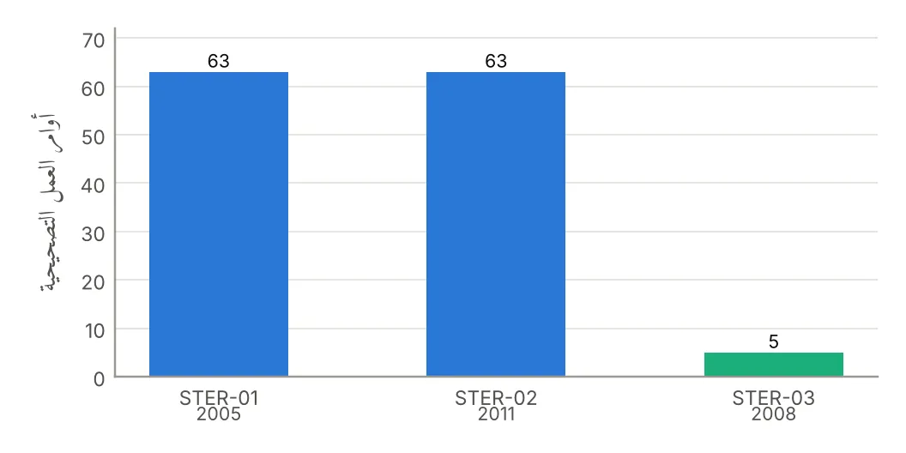
شكل 1-1: أوامر العمل التصحيحية لكل جهاز، مع سنة التركيب
المفارقة الثانية: أسوأ ماء في أفضل شهرين
من أصل مئة وأربعين عينة ماء، خرجت ثلاث فقط عن الحد المعتمد، وكلها من المبنى A في أيار 2014. وفي تلك الأسابيع الثلاثة نفسها، كانت أعطال جهازي المبنى A في أدنى مستوياتها: 0.67 أمر لكل جهاز في الأسبوع، مقابل 0.91 في الفترة كلها.
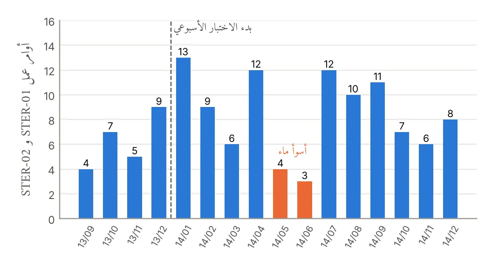
شكل 1-2: أوامر العمل الشهرية على جهازي اللوحة DB-A2
المفارقة الثالثة: الأعطال تعرف يوم الثلاثاء
| اليوم | السبت | الأحد | الاثنين | الثلاثاء | الأربعاء | الخميس | الجمعة |
|---|---|---|---|---|---|---|---|
| أوامر العمل على STER-01 وSTER-02 | 10 | 15 | 18 | 46 | 17 | 19 | 1 |
والكلس لا يعرف أيام الأسبوع.
المفارقة الرابعة: جهازان في نصف ساعة
أول أمري عمل في الملف كله كُتبا يوم الرابع من أيلول 2013، على الجهازين، بفارق تسع وعشرين دقيقة، وكلاهما مكتوب عليه كلس. والكلس يتراكم ببطء في كل جهاز على حدة، ولا يضرب جهازين في نصف ساعة.
السؤال
كتب سامر في دفتره: ما الذي يحدث لجهازي المبنى A في الوقت نفسه، ولا يحدث لجهاز المبنى B؟
ثم عاد إلى جدول الأجهزة الثلاثة، وقرأه عموداً عموداً: سنة التركيب لا تفرق، والمكان يفرق، واللوحة الكهربائية تفرق، والتغذية تفرق. وتحت كلمة «اللوحة» خط مرتين.
التحقيق
سار التحقيق في ست خطوات. ولم تكن مرسومة سلفاً، بل كانت كل خطوة تولد من السؤال الذي تركته التي قبلها.
الخطوة الأولى: الحمل أم الماء؟
كان لخالد ردّ جاهز على مفارقة الثلاثاء: «الثلاثاء يوم ضغط العمليات. الأجهزة تعمل أكثر، فتتعطل أكثر». وهو رد يمكن اختباره.
السؤال: هل تتعطل الأجهزة يوم الثلاثاء لأنها تعمل أكثر؟ والأداة: عدّ الدورات من سجل المتحكم، ثم قسمة الأعطال عليها.
| اليوم | الدورات | أوامر العمل | لكل ألف دورة |
|---|---|---|---|
| السبت | 1669 | 10 | 6.0 |
| الأحد | 1701 | 15 | 8.8 |
| الاثنين | 1692 | 18 | 10.6 |
| الثلاثاء | 1648 | 46 | 27.9 |
| الأربعاء | 1683 | 17 | 10.1 |
| الخميس | 1650 | 19 | 11.5 |
| الجمعة | 683 | 1 | 1.5 |
الثلاثاء من أقل الأيام دورات، ومعدل أعطاله أكثر من ضعف أعلى معدل في أي يوم آخر. وفي الأسابيع الثلاثة التي ساء فيها الماء، وقعت أربعة أوامر عمل فقط، وكل واحد منها سبقه إنذار كهربائي.
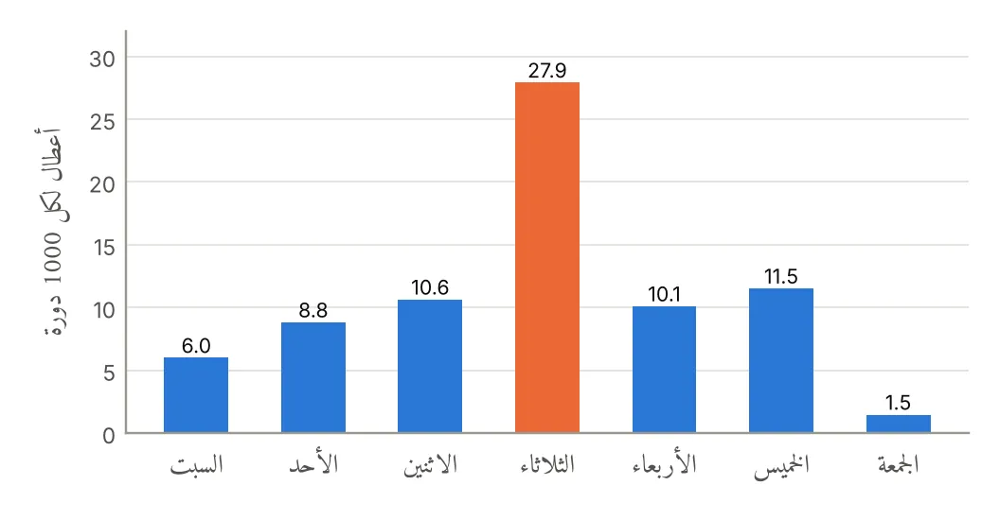
شكل 1-3: الأعطال لكل ألف دورة بحسب يوم الأسبوع
ما أجابت عنه الخطوة: لا الحمل يفسر الثلاثاء، ولا الماء يفسر الأعطال.
الخطوة الثانية: ما كتبه الفني، وما كتبه الجهاز
السؤال: هل العطل المكتوب في أمر العمل هو ما سجله المتحكم؟
وهنا احتاج سامر إلى مفهوم سيحمله معه في كل قضية لاحقة: الإنذار الجذري. فالجهاز حين يتوقف يكتب سلسلة من الأسطر، وأولها في الزمن هو الأقرب إلى السبب. فعرّف الإنذار الجذري لكل أمر عمل بأنه آخر إنذار أولي على الجهاز نفسه خلال الساعات الثلاث السابقة للبلاغ. والإنذارات الأولية أربعة: A01 هبوط الجهد، وA02 انقطاع التغذية، وA11 مانع تسرب الباب، وA21 حساس الحرارة. أما A31، انخفاض الماء، فيظهر بعد إعادة التشغيل لا قبلها.
| ما كتبه الفني | A02 | A01 | A11 | A21 | المجموع |
|---|---|---|---|---|---|
| مولد البخار، اشتباه كلس | 54 | 10 | 0 | 0 | 64 |
| تسرب مانع الباب | 21 | 4 | 3 | 0 | 28 |
| انحراف الحرارة | 14 | 3 | 0 | 2 | 19 |
| خطأ في المتحكم | 16 | 2 | 0 | 0 | 18 |
| مشكلة كهرباء | 2 | 0 | 0 | 0 | 2 |
من أصل مئة وواحد وثلاثين أمر عمل، كان الإنذار الجذري كهربائياً في مئة وستة وعشرين. والفنيون كتبوا «كهرباء» مرتين فقط. والجدول كاملاً في الجدول أ-3.
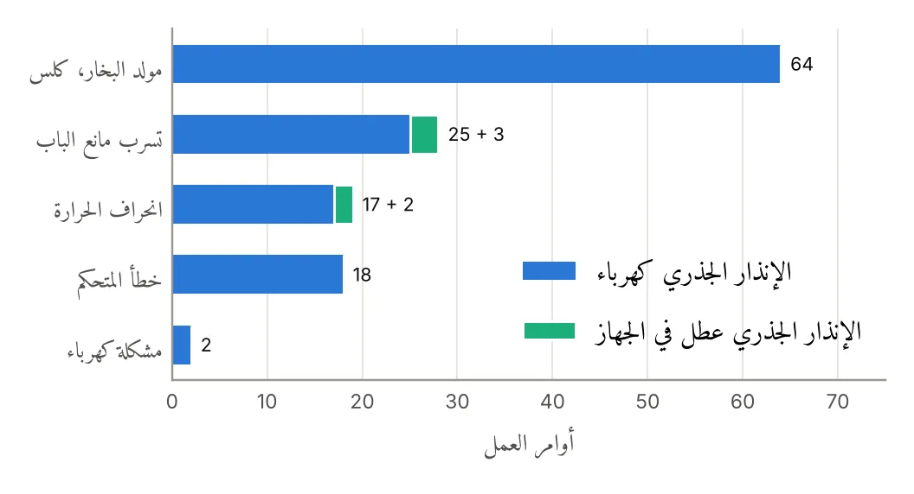
شكل 1-4: ما كتبه الفني مقابل الإنذار الجذري في سجل المتحكم
ونظر سامر إلى السطر الأول طويلاً. فأطول عمود في مخطط باريتو الذي رسمه، أربعة وستون أمراً «كلس»، لم يكن فيه أمر واحد سببه الكلس. أربعة وخمسون منها انقطاع تغذية، وعشرة هبوط جهد. وكانت القطع التي استُبدلت بعد توقفات سببها الكهرباء قد كلفت واحداً وثلاثين ألفاً وستمئة وثلاثين شيكلاً.
ما أجابت عنه الخطوة: الفني يكتب ما يراه بعد التوقف، والجهاز يكتب ما حدث قبله.
المواجهة الأولى
كان على سامر أن يخبر خالداً أن المذكرة التي دبّسها على طلب الشراء خاطئة.
لكنه لم يفعل. فقد كان يعرف أن خالداً سيغضب، وكان يريد أن يذهب إلى اللجنة بقصة مكتملة. وحين رأى بعد أيام أن الأعطال تتبع الاختبار الأسبوعي للمولد، ارتكب خطأه الثاني: أخذ الجدولين إلى مدير المستشفى مباشرة، في ممر غرف العمليات، دون أن يمر بخالد.
استمع المدير باهتمام، ثم رفع الهاتف واتصل بخالد أمامه: «لماذا أسمع هذا من مهندس عمره أسبوعان؟».
وفي ذلك المساء دخل سامر مكتب خالد، فوجده واقفاً، والمذكرة في يده.
قال خالد بصوت منخفض، أخطر من الصراخ: «كتبتَ أن الكلس نصف المشكلة. دبّست رأيك على طلبي. ثم ذهبت إلى المدير تقول إن الكلس ليس مشكلة أصلاً. فأي الرأيين رأيك؟».
«الثاني. الأول كان خطأ».
«وكنت تعرف هذا منذ أيام. ولم تقله لي».
ولم يجد سامر جواباً. فقد كان خالد محقاً.
قال خالد: «أنت خارج الملف أسبوعين. المدير يريد دراسة كاملة قبل اجتماع اللجنة في كانون الثاني. اكتبها في وقتك. لكن لا تدخل قسم التعقيم بلا إذن مني».
ولم يتصل سامر بيوسف تلك الليلة. كان يعرف ما سيسمعه، وكان يخجل منه. فجلس في غرفته، وكتب في دفتره جملة واحدة: «كسبت الجدال أمام المدير، وخسرت الرجل الذي سينفذ».
الخطوة الثالثة: كم مرة، وكم مدة؟
قضى سامر الأسبوعين على السجلات وحدها، في مكتب صغير قرب المستودع.
السؤال: ما الفرق الحقيقي بين الأجهزة الثلاثة؟ ومتى تغير سلوكها؟ والأداة: متوسط الزمن بين الأعطال، ومتوسط زمن الإصلاح، والإتاحة. وتعريفها في الملحق د.
حسبها سامر أولاً كما في كتب الجامعة: فترة الرصد من أول أيلول 2013 حتى آخر 2014، أي 11688 ساعة، مقسومة على عدد الأعطال. فخرج لـ STER-01 متوسط 185.5 ساعة بين الأعطال، وإتاحة 98.1%.
ثم توقف عند الرقم. فالجهاز لا يعمل أربعاً وعشرين ساعة. يعمل من السادسة صباحاً حتى العاشرة ليلاً، ويوم الجمعة حتى الثانية عشرة ظهراً. ولا يتعطل إلا وهو يعمل. فمن يقسم ساعات الليل التي ينام فيها الجهاز على أعطاله، يحصل على جهاز أصح مما هو. فأعاد الحساب على ساعات التشغيل المجدولة، وهي 7102 ساعة في الفترة نفسها، وعلى التوقف الذي وقع داخلها فقط:
| الجهاز | الأعطال | بين الأعطال، ساعة تشغيل | بين الأعطال، يوم عمل من 16 ساعة | زمن الإصلاح، ساعة | الإتاحة التشغيلية | ساعات التوقف داخل ساعات العمل |
|---|---|---|---|---|---|---|
| STER-01 | 63 | 112.7 | 7.0 | 3.6 | 97.6% | 171 |
| STER-02 | 63 | 112.7 | 7.0 | 3.5 | 97.4% | 186 |
| STER-03 | 5 | 1420.4 | 88.8 | 3.3 | 99.8% | 16 |
والفرق ليس تفصيلاً. فعلى الساعات التقويمية تبدو المشكلة أخف بالثلث. ووحدة الزمن جزء من السؤال نفسه: أي ساعات نقصد؟ ساعات الحائط، أم الساعات التي يعمل فيها الجهاز ويمكن أن يتعطل فيها؟ والمقارنة بين الأجهزة الثلاثة تصح في الحالتين، لكن الرقم الذي يُعرض على المدير يجب أن يكون الثاني. والعمر لا يظهر في أي رقم، واللوحة تظهر في كل رقم. والأعطال شهراً بشهر في الجدول أ-1، والمقاييس بالطريقتين في الجدول أ-2، والبرنامج الذي يحسبها في المستودع المرافق.
ثم قسم سامر الفترة عند السابع من كانون الثاني 2014، يوم بدأ الاختبار الأسبوعي للمولد تحت الحمل، بعد أن عجز المولد عن الإقلاع في عاصفة كانون الأول 2013. فارتفع معدل أعطال STER-01 من 3.3 إلى 4.1 في كل ثلاثين يوماً، وSTER-02 من 2.6 إلى 4.3.
ولاحظ أن إتاحة 97.6% رقم يطمئن أي إدارة. لكنه يعني توقفاً كل سبعة أيام عمل، وكل توقف يلغي أطقماً جراحية لعملية محددة في ساعة محددة. فالمؤشر المجمّع يخفي توزيع الألم.
ما أجابت عنه الخطوة: اللوحة تفرق، والعمر لا يفرق، والأعطال ارتفعت مع بدء الاختبار الأسبوعي.
الخطوة الرابعة: الساعة واليوم
السؤال: هل تأتي الإنذارات الجذرية بعد تحويلات المولد مباشرة؟ والأداة: لكل إنذار جذري، يُبحث عن آخر تحويل قبله. فإن كان الفرق ستين ثانية أو أقل، عُدّ مطابقاً.
| الجهاز | إنذارات جذرية خلال ستين ثانية بعد تحويل |
|---|---|
| STER-01 | 54 من 63، أي 86% |
| STER-02 | 49 من 63، أي 78% |
| STER-03 | 4 من 5، أي 80% |
ولو كانت الأعطال تأتي عشوائياً في الزمن، لكانت المطابقة اثنين من مئة من الواحد بالمئة فقط. أما الإنذارات التي لم تطابق أي تحويل، فكانت كلها من نوع واحد: A01، هبوط الجهد، تسعة عشر من تسعة عشر.
والاختبار الأسبوعي يبدأ كل ثلاثاء بين السابعة وثمانٍ وعشرين دقيقة والسابعة وأربع وثلاثين، في ذروة الدورات الصباحية. ومن أوامر العمل الستة والأربعين التي وقعت يوم الثلاثاء على جهازي المبنى A، كان ثلاثة وأربعون سببها تحويل الاختبار نفسه.
والحل يبدو واضحاً: نقل الاختبار إلى وقت لا تعمل فيه الأجهزة. وهو صحيح ومجاني. وكان سامر على وشك أن يكتبه ويرسله، وفي يده جدول يكفي لإقناع أي لجنة. ثم نظر إلى السطر الأخير في الجدول: تسع عشرة حالة لا يفسرها المولد. فمن يتوقف هنا، يحل ثلاثة وأربعين عطلاً، ثم يُفاجأ في الشتاء التالي بأن الأعطال عادت مع انقطاعات الشبكة.
ما أجابت عنه الخطوة: الأعطال تتبع تحويلات المولد، والثلاثاء يوم الاختبار. وبقيت تسع عشرة حالة بلا تفسير.
الخطوة الخامسة: هل يهترئ الجهاز؟
قبل مطاردة التسع عشرة، أراد سامر أن يغلق باب العمر نهائياً، لأن طلب الشراء ما زال على مكتب خالد.
السؤال: هل تتزايد الأعطال مع الزمن كما في الأجهزة التي تهترئ؟ والأداة: توزيع ويبل للفترات بين الأعطال. ومعلمة الشكل فيه، بيتا، تقول كيف تأتي الأعطال: قرب الواحد تعني معدلاً ثابتاً من سبب خارجي، وفوق اثنين تعني اهتراءً. وطريقتا التقدير في الملحق د.
| الجهاز | عدد الفترات | بيتا | مجال الثقة 90% | eta |
|---|---|---|---|---|
| STER-01 | 62 | 1.13 | من 0.99 إلى 1.37 | 7.9 يوم |
| STER-02 | 62 | 1.08 | من 0.94 إلى 1.29 | 7.9 يوم |
ما أجابت عنه الخطوة: لا اهتراء. شيء من خارج الجهاز يوقفه.
الخطوة السادسة: الجهد عند المقبس
السؤال: ما الذي يوقف الجهاز حين لا يوجد أي تحويل؟ والفرضية: هبوطات قصيرة في جهد الشبكة لا تكفي لتشغيل المولد، لكنها تنزل تحت 196 فولتاً، وهو الحد الذي يوقف عنده المتحكم الدورة.
ولم يكن في المستشفى سجل يختبر هذه الفرضية. فالمولد لا يسجل إلا ما يشغّله، والجهاز لا يسجل إلا ما يوقفه. وكان على سامر أن يصنع مصدراً ثالثاً، وأن يدخل قسم التعقيم ليركّبه.
ذهب إلى خالد. لم يحمل جداول. حمل اعتذاراً.
قال: «أخطأت مرتين. كتبت المذكرة قبل أن أقرأ السجل. ثم ذهبت إلى المدير قبل أن أذهب إليك. وأحتاج الآن إذنك لأركّب مسجل جهد عند STER-01 أربعة أسابيع».
نظر إليه خالد طويلاً. ثم قال: «حمدان سيساعدك في التركيب. وأريد نسخة من كل ما تجده، قبل المدير».
فركّب المسجل من التاسع من تشرين الثاني إلى السادس من كانون الأول 2014: ثمانية وعشرون يوماً، وأربعون ألفاً وثلاثمئة وعشرون دقيقة.
| ما وجده المسجل | العدد |
|---|---|
| دقائق نزل فيها أدنى جهد تحت 196 فولتاً | 23 |
| منها دقائق انقطع فيها الجهد كلياً | 12 |
| من الدقائق الصفرية، ما طابق تحويلاً في سجل المولد خلال دقيقتين | 12 |
| هبوطات بين الصفر و196 فولتاً بلا أي حدث في سجل المولد | 11، أدناها 185.9 فولت |
| توقفات STER-01 الكهربائية في فترة التسجيل | 5 |
| منها ما وقع داخل دقيقة منخفضة الجهد | 5 |
ففي مساء الثاني عشر من تشرين الثاني مثلاً، سجل STER-01 إنذار هبوط الجهد في التاسعة وست عشرة دقيقة، ولم يكن في سجل المولد أي حدث. أما المسجل فرأى الجهد ينزل إلى 193.2 فولت في الدقيقة التي قبلها، ويبقى تحت الحد أربع دقائق. وكل الدقائق الثلاث والعشرين مسرودة في الجدول أ-5.
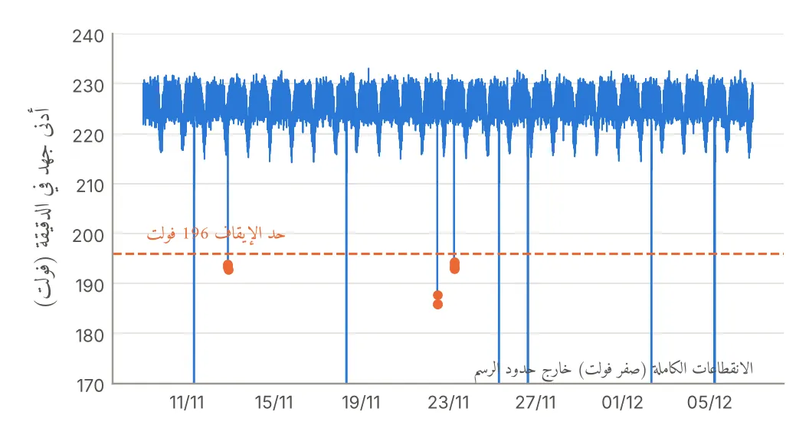
شكل 1-5: أدنى جهد في كل دقيقة عند مقبس STER-01 خلال 28 يوماً
ما أجابت عنه الخطوة: نوعان من مشكلات الكهرباء يوقفان جهازي المبنى A: انقطاع لثوانٍ عند كل تحويل، وهبوط في جهد الشبكة لا يراه المولد أصلاً.
الحل
من أين جاء كل عطل؟
| المصدر | أوامر العمل على جهازي المبنى A |
|---|---|
| تحويل مفتاح التحويل في انقطاع حقيقي للشبكة | 60 |
| تحويل مفتاح التحويل في الاختبار الأسبوعي | 43 |
| هبوط في جهد الشبكة دون تحويل | 19 |
| عطل حقيقي في الباب أو الحساس | 4 |
| المجموع | 126 |
مئة واثنان وعشرون من مئة وستة وعشرين سببها الكهرباء. والتوزيع لكل جهاز في الجدول أ-4.
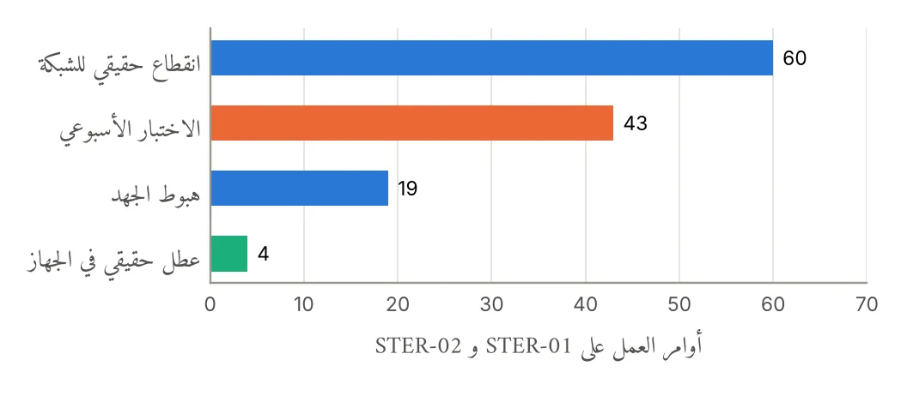
شكل 1-6: مصدر كل أمر عمل تصحيحي على جهازي المبنى A
وكانت ثلاثة مصادر مستقلة قد اتفقت على هذه الصورة، لم يكتب أياً منها إنسان: ذاكرة المتحكم، وسجل مفتاح التحويل، ومسجل الجهد. وكان هناك مصدر رابع لم يخطط له أحد: STER-03 نفسه، جهاز من الطراز نفسه تقريباً، يقف خلف بطارية، ولا يتعطل. كان المجموعة الضابطة في تجربة لم يصممها أحد، يقف أمام الجميع منذ 2008.
الخطة
كتب سامر خطة من أربع خطوات، بترتيب مقصود:
1. هذا الأسبوع: نقل الاختبار الأسبوعي للمولد إلى بعد ظهر الجمعة. التكلفة صفر.
2. هذا الشهر: نموذج أمر عمل جديد، فيه رمز الإنذار الجذري ووقته، ووقف إزالة الكلس التي لا يسبقها دليل.
3. في الميزانية القادمة: مزود طاقة غير منقطعة للوحة DB-A2.
4. بعد كل خطوة: إعادة التحليل نفسه، وإعادة تركيب مسجل الجهد.
وكتب في آخر الدراسة فقرة لم يطلبها أحد: «المذكرة المؤرخة في 17 أيلول، التي أوصت بعقد لإزالة الكلس، كانت مبنية على ما كتبه الفنيون لا على ما سجلته الأجهزة. وأنا أسحبها».
اجتماع اللجنة
دخل سامر اجتماع اللجنة في كانون الثاني 2015 بثلاث أوراق، بلغة يفهمها المدير: ما يخرج من النظام، وما يُحبس فيه، وما يُصرف لتشغيله.
| البند | القيمة |
|---|---|
| دورات مكتملة على STER-01 وSTER-02 | 10557 |
| دورات ضاعت بسبب توقفات الكهرباء | 252 |
| دورات أُلغيت لكل الأسباب | 169 |
| مجموع الدورات الضائعة | 421، أي 3.8% من الدورات الممكنة |
| منها بسبب الاختبار الأسبوعي وحده | 129 |
| مال صُرف على قطع لم تكن سبب التوقف، المبنى A | 30630 شيكلاً |
| ساعات فني على أعطال سببها الكهرباء | 244، منها 72 خارج الوردية الصباحية |
ثم قال جملة واحدة: نقل الاختبار وحده، بلا تكلفة، كان سيزيل من السجل الماضي ثلاثة وأربعين أمر عمل، ومئة وست عشرة ساعة توقف، وتسعة آلاف وسبعمئة وخمسين شيكلاً.
سأل المدير: «والخطوة الأولى، متى تبدأ؟».
ولم يجب سامر. نظر إلى خالد.
قال خالد: «الجمعة القادمة. قسم الكهرباء موافق، كلمتهم أمس». ثم سحب طلب الشراء من جدول الأعمال.
وفي الممر بعد الاجتماع، قال خالد لسامر دون أن يتوقف عن المشي: «كنت محقاً في الأرقام، ومخطئاً في الطريق. المرة القادمة، ابدأ بي».
كيف سيعرف أنه كان محقاً؟
كتب سامر في آخر خطته اختبارات يستطيع أي شخص أن يعيدها دون أن يسأله:
1. بعد نقل الاختبار: إلغاءات الدورة صباح الثلاثاء بين السابعة وخمس وعشرين دقيقة والسابعة وأربعين دقيقة تصل إلى صفر.
2. بعد مزود الطاقة: أعطال جهازي المبنى A تقترب من رقم STER-03، أي خمسة أوامر عمل في ستة عشر شهراً.
3. مسجل الجهد عند المقبس لا يسجل جهداً أدنى من 196 فولتاً.
ما تعلمه سامر
في المساء اتصل يوسف، وسأل سؤاله المعتاد: «ماذا تعلمت؟».
قال سامر: «أن الفني كتب رأيه، والجهاز كتب ما حدث. وأنني رسمت رأي الفني في مخطط جميل، ودبّسته على طلب شراء».
«وماذا أيضاً؟».
«أن خالداً لم يكن خصمي. كان الرجل الذي سينفذ. وكدت أخسره لأنني أردت أن أكون محقاً أمام المدير».
وعرف سامر في نابلس أن الأدلة كانت أمامه طوال الوقت. كان المولد يدور كل ثلاثاء، والجهاز يكتب كل ثانية، وSTER-03 يقف هادئاً في المبنى الآخر. لم يكن ينقص أحداً أن يرى الأدلة. كان ينقصه أن يراها معاً. وكان ينقص سامر نفسه، في أسبوعه الأول، أن يعرف أن الحل لا يمر إلا بالناس الذين سينفذونه.
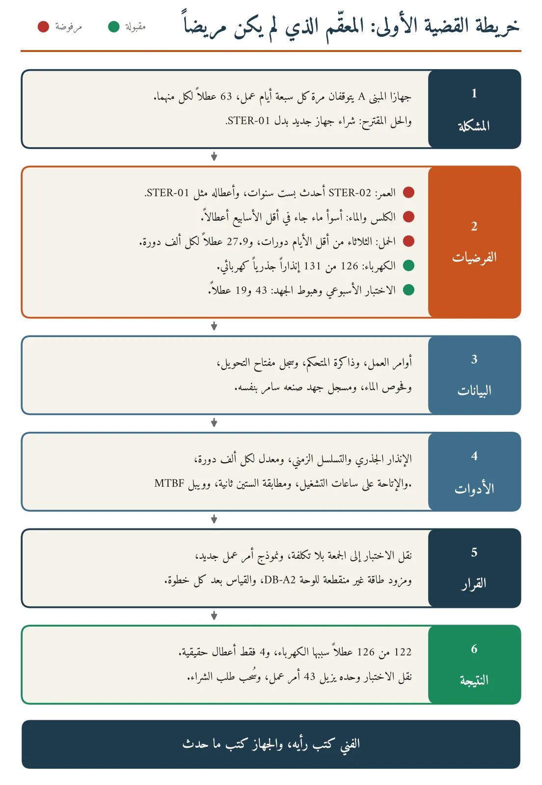
الفصل الثانيالغطاء الذي لا يُفتح
الرياض، صيف 2017
الحقيبة
بعد سنتين ونصف في قسم الصيانة، صار سامر يعرف المستشفى كما يعرف المرء بيته. ونُقل الاختبار الأسبوعي للمولد إلى بعد ظهر الجمعة، فاختفت إلغاءات الثلاثاء كما تنبأ. ثم رُكّب مزود الطاقة غير المنقطعة، فصار STER-01 وSTER-02 يتصرفان كما يتصرف STER-03 منذ سنين. وكتب خالد اسم سامر في التقرير السنوي، بخط صغير، في آخر صفحة.
لكن الإنسان لا يقيس حياته بما أنجز فقط، بل بما يظن أنه لم يجربه بعد. وفي ربيع 2017 وصلته رسالة من مصنع مياه معبأة في الرياض. يبحثون عن مهندس جودة يعرف التحليل الإحصائي «لا على الورق».
قالت أمه حين أخبرها: «والمستشفى؟».
قال: «المستشفى بخير. الأجهزة لم تعد تتوقف».
قالت: «لم أسأل عن الأجهزة».
ولم يعرف كيف يجيب. فما يراه المسافر ربحاً واضحاً، يراه من يبقى خسارة واضحة، وكلاهما صادق.
قبل السفر بأسبوع، جلس مع يوسف في مقهى قديم قرب دوار الشهداء. قال يوسف: «ستجد هناك تفسيراً جاهزاً لكل مشكلة، ينتظر مهندساً جديداً يوقّع عليه. في نابلس تعلمت ألا تصدق ما كتبه الفني قبل أن تقرأ ما كتبه الجهاز. هناك قد تتعلم الدرس الذي بعده».
«وما الدرس الذي بعده؟».
ابتسم يوسف ولم يجب.
عبر سامر الجسر إلى عمّان في أواخر تموز، ثم طار إلى الرياض. وحين خرج من المطار في الواحدة بعد منتصف الليل، صدمته حرارة الهواء كأنها جدار.
المصنع
بدأ سامر عمله في السادس من آب 2017. خط تعبئة يعمل أربعاً وعشرين ساعة بثلاث ورديات: A من السادسة صباحاً، وB من الثانية ظهراً، وC من العاشرة ليلاً. ويصنع المصنع أغطيته بنفسه: قالب حقن اسمه CAP-M1 يصب الغطاء من حبيبات الراتنج، ثم ترتفع الأغطية إلى صومعة، ومنها تنزل إلى آلة تغطية دوّارة فيها اثنا عشر رأساً.
وفي عقد سامر فترة تجربة مدتها ثلاثة أشهر، يكتب في نهايتها مدير الجودة تقريراً، وعلى التقرير يتوقف كل شيء. ومدير الجودة اسمه فهد.
الحجز السادس عشر
الأحد، العشرون من آب
في السادسة وأربعين دقيقة مساء ذلك الأحد، كان ماثيو، فني القياس في الوردية B، يضع خمس عبوات متتالية على جهاز قياس عزم الفتح. وعزم الفتح هو القوة التي يحتاجها الإنسان ليفتح الغطاء بيده، والمواصفة بين 1.0 و2.0 نيوتن متر. تحت الحد الأدنى يتسرب الماء، وفوق الأعلى يعجز الزبون عن الفتح.
قرأ ماثيو: 1.979، ثم 1.897، ثم 1.922، ثم 1.998. ثم الخامسة: 2.123.
وقراءة واحدة فوق 2.0 تعني حجز الكتلة كلها: ساعتان من الإنتاج، ثلاثة آلاف كرتونة. كتب ماثيو على اللوح الأبيض: H-016. وقال: «الحجز السادس عشر هذا الصيف. كلها في ورديتي».
ورقتان على مكتب فهد
على مكتب فهد ورقتان. الأولى شكوى من سلسلة متاجر: «زبائننا يقولون إن الغطاء لا يُفتح باليد». والثانية عرض سعر لآلة تغطية جديدة، بمليون وثمانمئة وخمسين ألف ريال.
قال فهد: «الرؤوس اهترأت، وكل رأس يشد بطريقته. أريد توقيعك على التقرير الفني قبل اجتماع الإدارة. والاجتماع بعد عطلة العيد، يوم الخميس السابع من أيلول».
ودفع إليه ورقة مكتوبة سلفاً، فيها سطر فارغ لاسمه.
قال سامر: «أحتاج أن أرى القراءات أولاً».
قال فهد بهدوئه المهذب: «القراءات على اللوحة. المتوسط أحمر منذ شهر». ثم أضاف، دون أن يرفع صوته: «أنت هنا منذ أسبوعين يا مهندس. وأنا من يكتب تقرير فترة التجربة».
ولم يكن في الجملة تهديد صريح. لكن سامر فهمها كما يفهمها كل غريب: التوقيع الأول هو امتحانه الأول.
ناصر في الممر
وفي الممر أوقفه ناصر، مدير الإنتاج، سريع الكلام، يحمل هاتفه كأنه جزء من يده.
قال: «فهد سيقول لك الآلة. لا تصدق. المشتريات غيرت مورد الراتنج في تموز لتوفر ثلاثمئة وعشرة ريالات في الطن. قبل التغيير لم يكن عندنا حجز واحد. بعده ستة عشر. هذا ليس رأياً، هذا عدّ».
وفي تلك الليلة اتصل سامر بيوسف. قال يوسف: «اثنان يملكان تفسيرين مختلفين، وكلاهما متأكد. ماذا يقول الجهاز الذي يقيس؟».
«جهاز العزم يقول 2.123».
«ومن قال لك إن جهاز العزم يقول الحقيقة؟».
وفهم سامر الدرس الذي بعده. ففي نابلس كان الجواب: صدّق الجهاز. أما هنا، فكل قراءة ثلاثة أشياء مختلطة: الشيء المقاس، وأداة القياس، والإنسان الذي يستعملها.
من اللوحة إلى السجل
تسعة ملفات
كانت لوحة الجودة تعرض متوسط العزم اليومي فقط، بالأخضر أو الأحمر. وطلب سامر ما تحتها، وقال لمسؤول المختبر جملة سيكررها كثيراً: «المتوسط يخفي من قاس، ومتى، وأي رأس أغلق العبوة».
وجمع تسعة ملفات تغطي ستين يوماً، من الخامس والعشرين من حزيران حتى الثالث والعشرين من آب 2017:
| الملف | ماذا فيه | الأسطر |
|---|---|---|
| torque_subgroups_60days.csv | كل قراءة عزم، مع الرأس والمشغل ودفعة الراتنج | 3600 |
| mold_temperature.csv | حرارة قالب الأغطية كل عشر دقائق | 8640 |
| cooler_log.csv | سجل المبرد الذي يبرد ماء القالب، مع حرارة الهواء ورطوبته | 8640 |
| purchase_log.csv | أوامر شراء الراتنج وتاريخ أول استخدام لكل دفعة | 14 |
| gauge_rr_study.csv | دراسة القياس التي نفذها سامر بنفسه | 90 |
| qc_holds.csv | حجوزات الجودة | 16 |
| customer_complaints.csv | شكاوى العملاء كما وصلت | 12 |
| cost_rates.csv | أسعار وتكاليف من المالية | 6 |
| quotes.csv | عروض الأسعار للحلول المقترحة | 5 |
والقراءات تُؤخذ كل ساعتين، خمس عبوات متتالية في كل مرة، وتسمى كل مجموعة «عينة فرعية». وفي كل وردية يقيس شخص واحد: القحطاني في الصباح، وماثيو بعد الظهر، ودِلا كروز في الليل. أي أن «من يقيس» و«متى يقيس» شيء واحد في هذا الملف. وهذا ما يسميه الإحصائيون الخلط: أن يتغير شيئان معاً، فلا تعرف أيهما صنع الأثر.
ولذلك فعل سامر شيئاً لم يفعله أحد في المصنع من قبل. لكن قياس عزم الفتح يتلف العينة، فمن يفتح الغطاء يكسر حلقة الأمان. فأخذ عشر دفعات، كل دفعة اثنتا عشرة عبوة متتالية من الرأس نفسه في الدقيقة نفسها، وعامل كل دفعة كأنها غطاء واحد. وأعطى كل مشغل ثلاث عبوات من كل دفعة، بترتيب عشوائي، وأرسل الثلاث الباقية إلى مختبر معايرة خارجي في الدمام. وبدأ بما بين يديه حتى تعود النتائج.
ثلاث مفارقات
كان لتفسير ناصر دليل يبدو حاسماً: صفر حجوزات في ثمانية عشر يوماً قبل تغيير الراتنج في الثالث عشر من تموز، وستة عشر في الأيام الاثنين والأربعين بعده. لكن سامر وضع ثلاثة أرقام أخرى بجانب هذا الرقم.
المفارقة الأولى: وردية واحدة
كل الحجوزات الستة عشر وقعت في الوردية B. لا حجز واحد في الصباح، ولا في الليل. والراتنج نفسه، وآلة التغطية نفسها، يعملان في الورديات الثلاث. والحجوزات مسرودة في الجدول ب-5، والشكاوى في الجدول ب-6.
المفارقة الثانية: الساعة
| الساعة | 00 | 02 | 04 | 06 | 08 | 10 | 12 | 14 | 16 | 18 | 20 | 22 |
|---|---|---|---|---|---|---|---|---|---|---|---|---|
| المتوسط | 1.456 | 1.453 | 1.443 | 1.509 | 1.511 | 1.509 | 1.517 | 1.529 | 1.537 | 1.704 | 1.625 | 1.452 |
العزم يقفز في السادسة مساء، لا في الثالثة حين تبلغ حرارة الرياض ذروتها. والليل أدنى من الصباح، ولم يشتكِ أحد من الليل لأن الانخفاض لا يسبب حجزاً.
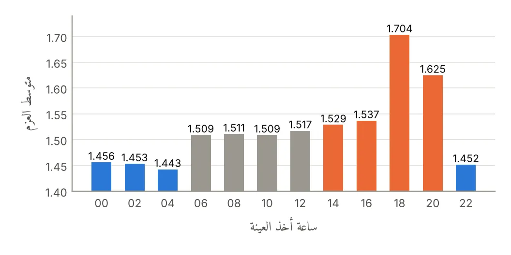
شكل 2-1: متوسط عزم الفتح بحسب ساعة أخذ العينة
المفارقة الثالثة: شكوى قبل التغيير
أول شكوى، CC-001، كانت عن عبوات أُنتجت يوم الرابع من تموز، في الوردية B، قبل أن يدخل الراتنج الجديد القالب بتسعة أيام.
كتب سامر سؤالين: ما الذي يشتد بعد الظهر في الأيام الحارة، ويصل إلى الغطاء متأخراً بضع ساعات؟ ولماذا ينخفض العزم في الليل، والليل لا يتغير فيه شيء؟
ثم نظر إلى السؤال الثاني مرة أخرى، وتذكر الملف: من يقيس في الليل شخص واحد.
التحقيق
الخطوة الأولى: هل العملية مستقرة؟
السؤال: هل التغير في العزم تغير طبيعي، أم له سبب خاص؟ والأداة: مخططا ضبط الجودة. مخطط X-bar يراقب متوسط كل عينة فرعية، أي مستوى العملية. ومخطط R يراقب المدى داخل العينة، أي تشتتها. وثوابت المخططين في الملحق د.
| البند | القيمة بالنيوتن متر |
|---|---|
| المتوسط الكلي | 1.520 |
| متوسط المدى | 0.212 |
| حدود X-bar | من 1.398 إلى 1.643 |
| الحد الأعلى لمخطط R | 0.449 |
| ما خرج عن الحدود | العدد | في أي وردية |
|---|---|---|
| نقاط فوق الحد الأعلى لـ X-bar | 56 | كلها في B |
| نقاط تحت الحد الأدنى لـ X-bar | 34 | 32 في C، و2 في A |
| نقاط فوق الحد الأعلى لـ R | 2 |
ومن النقاط الست والخمسين العالية، ثلاث وثلاثون أُخذت في الساعة الثامنة عشرة. والتفصيل بحسب الوردية في الجدول ب-1.
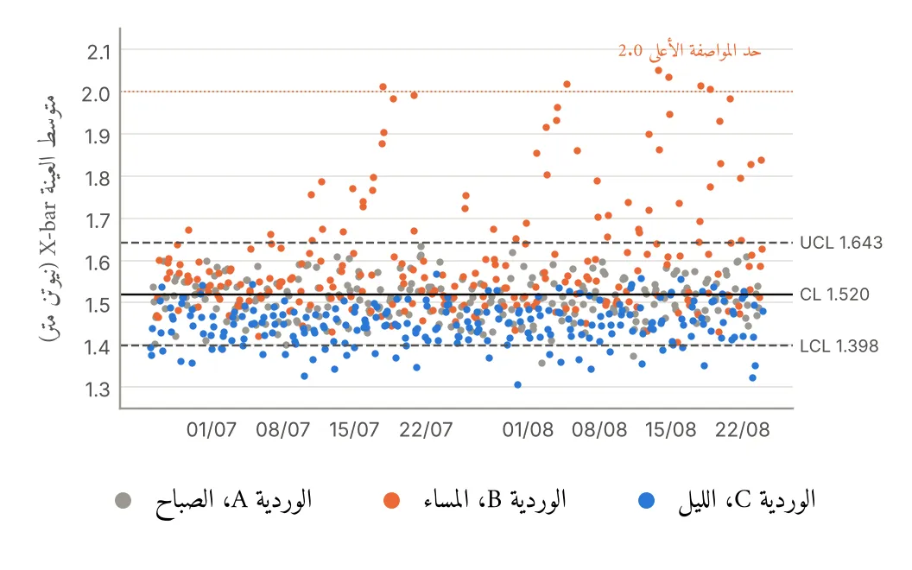
شكل 2-2: مخطط X-bar للعينات الفرعية بحسب الوردية
قال فهد حين رأى المخطط: «ست وخمسون نقطة فوق الحد. قلت لك الآلة لا تستقر».
لكن مخطط R كان شبه نظيف: نقطتان من سبعمئة وعشرين. والآلة التي اهترأت رؤوسها تُفسد الانتشار داخل العينة، لأن كل رأس يشد بطريقته. أما هنا، فالانتشار ثابت، والذي يتحرك هو مستوى العزم كله، صعوداً في المساء ونزولاً في الليل.
ثم طبق سامر قاعدة الثماني نقاط: إن وقعت ثماني نقاط متتالية في جانب واحد من الخط المركزي، فهناك على الأرجح سبب ثابت. فوجد ثماني سلاسل، كلها تحت الخط، وكلها تمر بالليل.
الخطوة الثانية: القدرة بطريقتين
| المؤشر | القيمة |
|---|---|
| Cp | 1.83 |
| Cpk | 1.75 |
| Pp | 1.23 |
| Ppk | 1.18 |
| قراءات فوق 2.0 | 31 من 3600 |
ابتسم فهد حين رأى Cpk يساوي 1.75، وقال: «نرسله للعميل. العملية قادرة، والشكاوى حالات فردية».
لكن Cpk يحسب التغير داخل العينة الفرعية فقط، أي داخل دقيقة واحدة تقريباً. وPpk يحسبه على الستين يوماً كلها. والفرق بينهما كبير لأن أربعة وخمسين بالمئة من التباين يقع بين العينات، لا داخلها. فإرسال Cpk للعميل يعني إرسال رقم صحيح حسابياً، خاطئ في معناه، إلى رجل يملك ملفاً لا يملكه المصنع: ملف شكاواه. والصيغ الأربع في الملحق د.
الخطوة الثالثة: ما الذي تغير، ومتى؟
القاعدة هنا بسيطة: السبب الحقيقي يبقى أثره بعد أن نثبت المتغيرات الأخرى، والسبب الزائف يختفي.
الراتنج بعد التقسيم
قسم سامر العينات بحسب حرارة القالب قبل ثلاث ساعات، ثم قارن الراتنجين داخل كل شريحة. وهذا هو التقسيم الطبقي: أن تقارن المتشابهات بالمتشابهات.
| حرارة القالب قبل 3 ساعات | عينات Gulf | متوسط Gulf | عينات Najd | متوسط Najd |
|---|---|---|---|---|
| أقل من 26 درجة | 210 | 1.495 | 445 | 1.498 |
| من 26 إلى 29 | 8 | 1.662 | 24 | 1.681 |
| من 29 إلى 32 | 1 | 1.530 | 25 | 1.817 |
| 32 فأكثر | 0 | 7 | 1.951 |
وحيث أمكنت المقارنة، تحت 26 درجة، الراتنجان متساويان: 1.495 مقابل 1.498. وفوق 29 درجة لا عينات تقريباً للراتنج القديم، فلا دليل على الراتنج الجديد، ولا براءة كاملة. والفرق الذي رآه ناصر جاء من أن الراتنج الجديد صادف أياماً أحر:
| الفترة | الأيام | أيام تجاوزت فيها الحرارة 44 درجة |
|---|---|---|
| قبل تغيير الراتنج | 18 | 4 |
| بعد تغيير الراتنج | 42 | 32 |
فناصر لم يقارن راتنجاً براتنج، بل قارن «راتنجاً قديماً في أيام معتدلة» بـ«راتنج جديد في أيام حارة».
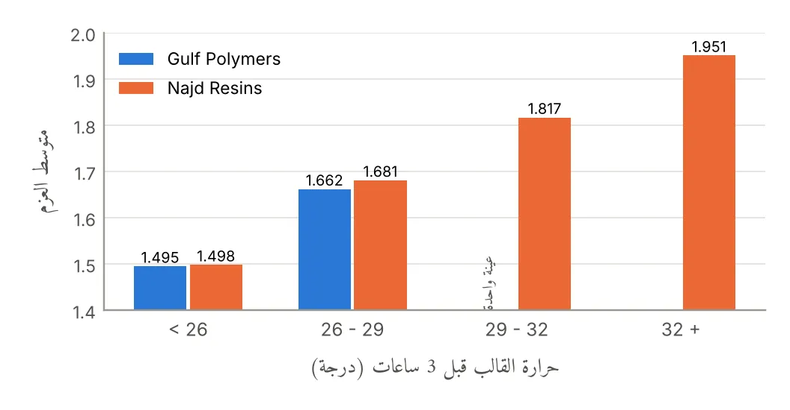
شكل 2-3: متوسط العزم لكل راتنج عند حرارة القالب نفسها
الرؤوس داخل العينة
ولاختبار تفسير فهد، طرح سامر من كل قراءة متوسط عينتها، فبقي أثر الرأس وحده، لأن القراءات الخمس أُخذت في الدقيقة نفسها، من القالب نفسه، بيد المشغل نفسه. وكان مدى آثار الرؤوس الاثني عشر 0.016 نيوتن متر، والمتوقع من الصدفة وحدها نحو 0.015. فالرؤوس متساوية. بل إن عرض الآلة الجديدة يعد بفرق بين الرؤوس أقل من 0.05، والآلة القديمة تحقق أفضل من ذلك.
الحرارة والتأخير
الأغطية تُصب في القالب، ثم تبقى في الصومعة قبل أن تصل إلى آلة التغطية. فحسب سامر الارتباط بين متوسط كل عينة وحرارة القالب قبلها بعدد من الساعات:
| التأخير بالساعات | 0 | 1 | 2 | 3 | 4 | 5 | 6 |
|---|---|---|---|---|---|---|---|
| معامل الارتباط | 0.08 | 0.33 | 0.61 | 0.75 | 0.58 | 0.26 | 0.02 |
الذروة عند نحو ثلاث ساعات، وهي متوسط بقاء الغطاء في الصومعة، ويتغير مع مستوى الصومعة. واليوم المتوسط ساعة بساعة في الجدول ب-2.
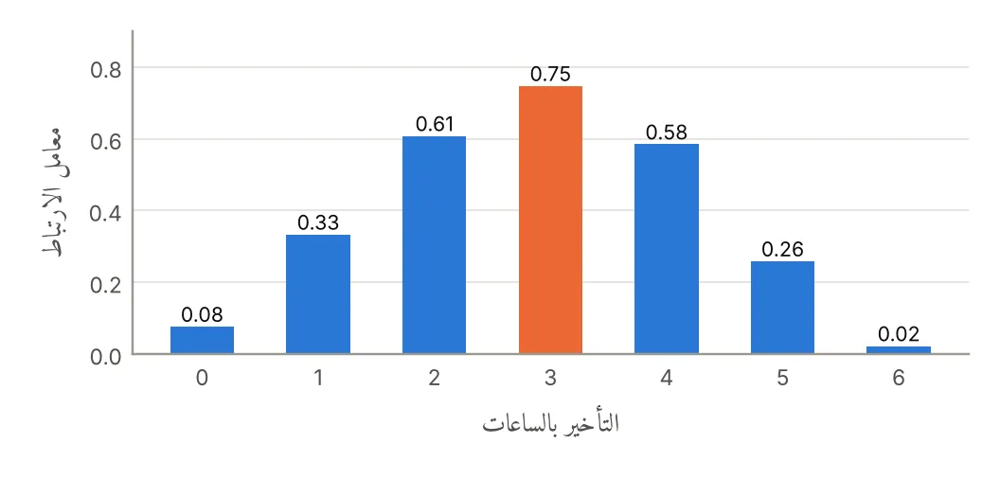
شكل 2-4: الارتباط بين العزم وحرارة القالب بحسب التأخير
المبرد
ولماذا ترتفع حرارة القالب؟ فتح سامر سجل المبرد الذي يبرد ماء القالب، ونقطة ضبطه اثنتا عشرة درجة.
| حرارة الهواء | 38 | 39 | 40 | 41 | 42 | 43 | 44 | 45 | 46 |
|---|---|---|---|---|---|---|---|---|---|
| حرارة الماء الخارج من المبرد | 12.0 | 12.0 | 12.0 | 12.0 | 12.3 | 14.3 | 16.6 | 18.9 | 21.1 |
حتى 42 درجة يحافظ المبرد على اثنتي عشرة. فوق ذلك يفقد السيطرة. وفي ستين يوماً تجاوز الهواء 42.5 درجة في تسعمئة وسبع وستين قراءة. والارتباط بين حرارة القالب وماء المبرد قبلها بعشرين دقيقة 0.98.
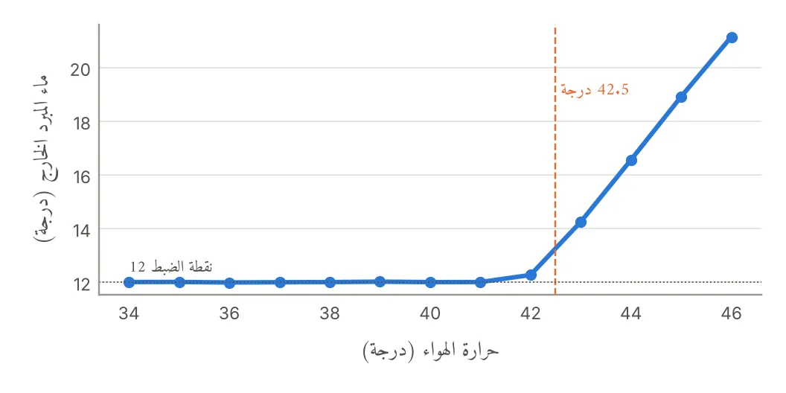
شكل 2-5: حرارة الماء الخارج من المبرد بحسب حرارة الهواء
وتذكر سامر صوت مكثف المبرد في الساحة الخلفية يوم الحجز السادس عشر، وعلى شاشته COMPRESSOR 100%. لقد مرّ بالسبب بنفسه، وسمعه، ولم يتوقف عنده.
لكن السجل لا يقول لماذا. فنزل سامر إلى رضوان، فني التبريد، وفتحا دفتر الصيانة معاً: المكثف يُغسل كل شهر في الصيف، وآخر غسيل قبل أسبوعين، والمراوح تعمل، وضغط الغاز في حدوده. وعلى لوحة المبرد المعدنية أنه صُمم لهواء حتى 42 درجة. قال رضوان: «اشتروه لصيف أخف من هذا». فالمبرد لم يمرض، بل يعمل عند حد تصميمه. ولو كان المكثف متسخاً، لكان غسله أرخص من أي مبرد جديد.
التوقيع
كان ذلك مساء الثلاثاء. وفي صباح الأربعاء وجد سامر على مكتبه التقرير الفني لآلة التغطية مرة أخرى، وعليه ورقة لاصقة بخط فهد: «نحتاج توقيعك اليوم».
ذهب إلى مكتب فهد، ووضع أمامه جدول الرؤوس وجدول المبرد.
قال: «لا أستطيع أن أوقع. الرؤوس متساوية. والمشكلة في المبرد».
قرأ فهد الجدولين بعناية، ثم أعادهما إليه. «المبرد مسؤولية الصيانة، لا الجودة. والآلة في ميزانيتي، وقد وعدت المدير العام بها. هل تفهم ما تطلبه مني؟».
«أطلب منك ألا تشتري آلة بمليون وثمانمئة وخمسين ألفاً لتحل مشكلة لا تحلها».
«وأنا أطلب منك أن تتذكر من أين جئت، وأين أنت، ومن يكتب تقريرك».
خرج سامر من المكتب ويداه ترتجفان. وفي تلك الليلة لم ينم. فكر في أمه، وفي القرض الذي أخذه ليسافر، وفي أن العودة إلى نابلس بعد شهرين ستكون أصعب من البقاء فيها.
ثم جاءت عطلة العيد. وبعدها عادت نتائج دراسة القياس من الدمام.
الخطوة الرابعة: هل نصدق جهاز القياس؟
السؤال: كم من التغير في القراءات يأتي من الأغطية نفسها، وكم يأتي من عملية القياس؟ والأداة: دراسة القياس بطريقة تحليل التباين، أو Gauge R&R. والحساب الكامل في الجدولين ب-3 وب-4، والطريقة في الملحق د.
| البند | القيمة |
|---|---|
| انحراف نظام القياس كله | 0.079 |
| انحراف الأغطية نفسها | 0.168 |
| نسبة نظام القياس من التغير الكلي | 42.5% |
| نسبة نظام القياس من عرض المواصفة | 47.2% |
| عدد الفئات التي يميزها القياس | 3.0 |
والدليل المعتمد في الصناعة يقبل أقل من عشرة بالمئة، ويرفض ما فوق ثلاثين، ويطلب خمس فئات على الأقل. فنظام القياس يأكل قرابة نصف المواصفة. والرقم حد أعلى، لأن التكرار يحمل معه الفرق بين عبوات الدفعة. لكن أثر المشغلين وحده 28.9%، على حافة الرفض.
| المشغل | الفرق عن قيمة مختبر المعايرة |
|---|---|
| J. Dela Cruz، الوردية الليلية | −0.085 |
| R. Mathew، الوردية المسائية | +0.012 |
| S. Al-Qahtani، الوردية الصباحية | +0.006 |
متوسط الليل 1.451، ومتوسط الصباح 1.512، وحرارة القالب قبل ثلاث ساعات في الحالتين 24.5 درجة. فالقالب لا يفرق بين الليل والصباح. القراءة هي التي تفرق. والسلاسل الثماني تحت الخط كانت في معظمها أثراً للقياس.
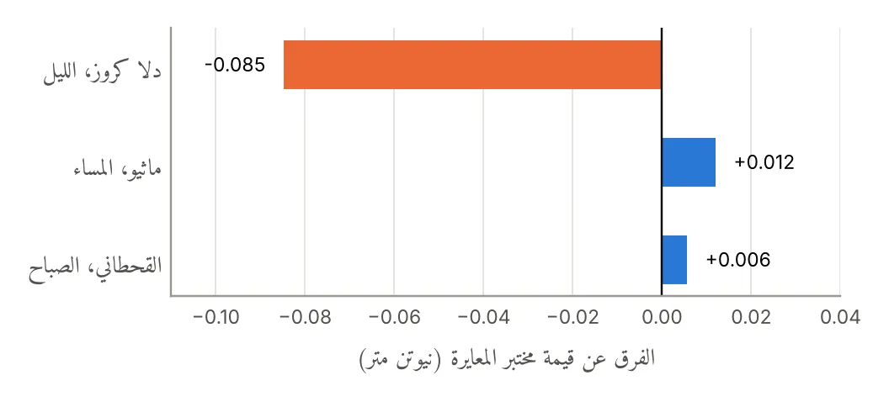
شكل 2-6: فرق كل مشغل عن قيمة مختبر المعايرة
الخطأ الثاني
وهنا ارتكب سامر أسوأ خطأ في حياته المهنية حتى ذلك اليوم.
كان متعباً، وغاضباً من مكتب فهد، ويريد أن يذهب إلى اجتماع الخميس بقضية لا ثغرة فيها. فكتب في منتصف الليل مسودة التقرير، وأرسلها إلى فهد للمراجعة. وكان في المسودة سطر واحد كتبه بسرعة: «سبب القراءات المنخفضة ليلاً: تحيز المشغل J. Dela Cruz، بمقدار −0.085 نيوتن متر».
وفي الصباح، قبل أن يصل سامر، كان فهد قد أرسل السطر إلى الموارد البشرية. وفي العاشرة رأى سامر دِلا كروز في المقصف، يمسك ورقة مطوية، ولا يأكل.
كان دِلا كروز رجلاً في الأربعين، جاء من الفلبين قبل ثماني سنوات، ويرسل معظم راتبه إلى عائلته. والورقة كانت إنذاراً مكتوباً: «أخطاء متكررة في القياس».
جلس سامر أمامه. ولم يعرف ماذا يقول.
وكان دِلا كروز هو الذي بدأ. تكلم بإنجليزية هادئة، فيها كلمات عربية تعلمها في المصنع.
«ثماني سنوات وأنا أقيس. علمني رامون، المشرف قبل فهد. رجع الفلبين من زمان». قلّب الورقة بين أصابعه. «أنا أعرف الليل واطي. كل ليلة واطي. قلت لرامون مرة، قال: الليل بارد، الغطاء ألين. خلاص».
«ولماذا لم تقل لأحد بعده؟».
نظر إليه دِلا كروز كأن السؤال غريب. «مين يسأل الليل؟ الاجتماعات الصبح. أنا نايم».
ثم أشار إلى الجهاز على الطاولة البعيدة. «وهذا. الجهاز يتحرك. شوف». وقام، ووضع عبوة، وأمسكها بيده اليسرى، ولفّ باليمنى، فمالت العبوة قليلاً تحت يده. «لازم أمسك قوي. إذا ما أمسكت، يطلع رقم ثاني. أنا أمسك هيك. ماثيو يمسك هيك. كل واحد له يد».
ثم جلس، وقال بصوت أخفض: «بنتي في الجامعة، تدرس تمريض في إيلويلو. سنة أخيرة. إذا راح الشغل...». ولم يكمل.
وعاد سامر إلى المختبر، وأمسك جهاز العزم بيده. لم يكن للجهاز مثبت. كل مشغل يمسك العبوة بطريقته، ويضغط عليها بزاوية مختلفة. ودِلا كروز يمسكها بطريقة تعلمها من رامون قبل ثماني سنوات، ولم يصححها له أحد، لأن أحداً لم يقارن قراءته بمرجع قبل هذا الأسبوع. والرجل الذي عرف منذ سنوات أن الليل منخفض، لم يسأله أحد. فلو وُضع أي شخص آخر مكانه، بالجهاز نفسه وبلا مثبت، لحصلنا على تحيز آخر.
لقد كتب سامر اسم إنسان في الخانة التي كان يجب أن يكتب فيها اسم طريقة.
ذهب إلى فهد. قال: «السطر خاطئ. المشكلة في الجهاز بلا مثبت، لا في دِلا كروز. يجب سحب الإنذار».
قال فهد: «الرقم رقمك. أنت كتبته، وأنا صدقته. والآن تريد أن تسحبه، كما تريد أن تسحب الآلة. يا مهندس، لا يمكن أن تكون محقاً في كل شيء وأنت هنا منذ شهر».
«كنت مخطئاً في هذا. ولهذا يجب أن أصححه».
ولم يرد فهد.
فكتب سامر مذكرة تصحيح من صفحة واحدة، إلى المدير العام، ونسخة إلى فهد والموارد البشرية: «السطر المتعلق بالمشغل J. Dela Cruz في مسودتي خاطئ، والخطأ خطئي. التحيز ناتج عن جهاز قياس بلا مثبت، وعن طريقة لم يدرّبها أحد. والحل مثبت للجهاز، ومعايرة، وتدريب المشغلين الثلاثة، بثمانية عشر ألف ريال، في أسبوعين. وأطلب سحب الإنذار».
وكان يعرف وهو يضغط زر الإرسال أنه يتجاوز فهداً للمرة الثانية في أسبوعين.
الخطوة الخامسة: هل يتنبأ التفسير بما لم يره؟
بقي امتحان أخير يفرق بين التفسير والقصة: أن يتنبأ التفسير ببيانات لم يرها. فبنى سامر نموذجاً بسيطاً على الأيام الخمسين الأولى فقط، ثم استعمله دون أي تعديل على الأيام العشرة الأخيرة.
العزم المتوقع = 0.209 + 0.0526 × حرارة القالب قبل 3 ساعات
| البند | القيمة |
|---|---|
| عينات لم يرها النموذج | 120 |
| الجذر التربيعي لمتوسط مربع الخطأ | 0.079 |
| الارتباط بين المتوقع والفعلي | 0.82 |
| نقاط عالية وقعت فعلاً | 15 |
| منها ما توقعه النموذج | 13 |
وكان خطأ التنبؤ، 0.079، يساوي تقريباً انحراف نظام القياس نفسه. أي أن ما بقي دون تفسير بعد الحرارة هو تقريباً ضجيج القياس.
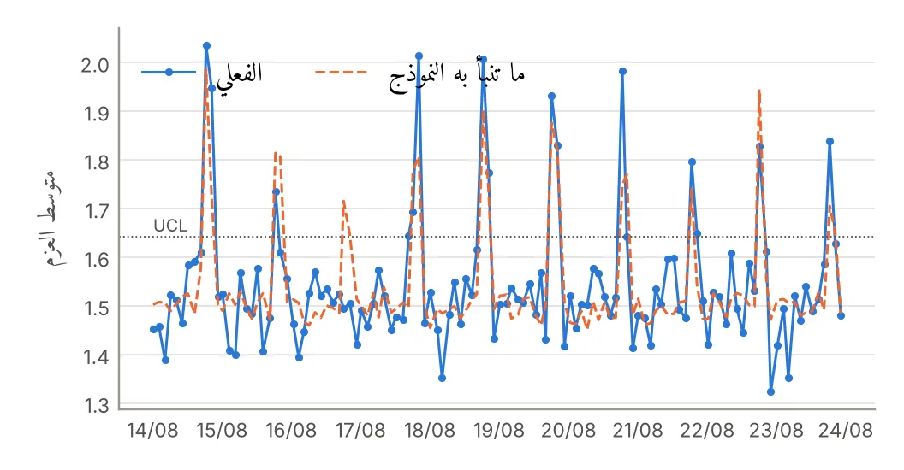
شكل 2-7: العزم الفعلي والمتوقع في الأيام العشرة التي لم يرها النموذج
الحل
خمسة عروض
| العرض | البند | السعر بالريال | مدة التوريد بالأسابيع |
|---|---|---|---|
| Q-01 | آلة تغطية جديدة باثني عشر رأساً | 1850000 | 26 |
| Q-02 | مبرد إضافي يحافظ على 12 درجة حتى 50 درجة | 310000 | 8 |
| Q-03 | مبرد مسبق يخفض حرارة هواء المكثف 6 درجات حين تقل الرطوبة عن 20% | 85000 | 3 |
| Q-04 | مثبت لجهاز العزم ومعايرة وتدريب | 18000 | 2 |
| Q-05 | الرجوع إلى الراتنج القديم، فرق السعر لكل طن | 310 | 0 |
والمبرد المسبق وسائد مبللة أمام مكثف المبرد، تبرد الهواء بالتبخر، ولا تعمل إلا في الهواء الجاف. ولم يأخذ سامر ادعاء المورد على علاته. ففي القراءات التي تجاوز فيها الهواء 42.5 درجة، كانت أعلى رطوبة 6.0%. ولو خُفضت كل قراءة ست درجات، لصارت أعلى حرارة في السجل 40.8، تحت حد فقدان السيطرة. لكن الوسائد تحتاج ماء وغسلاً شهرياً، فماء الرياض عسر.
| الحالة | قراءات فوق 2.0 في ستين يوماً |
|---|---|
| كما حدث | 31 |
| مع المبرد المسبق | 1 |
| مع المبرد الإضافي | 1 |
الحلان يعطيان النتيجة نفسها في السجل الماضي، والفرق بينهما مئتان وخمسة وعشرون ألف ريال.
وكانت الخطة: المثبت والمعايرة والتدريب في الأسبوعين الأولين، ثم إعادة دراسة القياس. واحتواء من اليوم الأول: كل إنتاج بأغطية صُنعت والقالب فوق 29 درجة يُعزل، ولا يُفرج عنه إلا بعد فحص مشدد بعينة من اثنتين وثلاثين عبوة، فمن هذه الأغطية جاءت أربعة عشر حجزاً من ستة عشر. ويراجع الصيانة والإنتاج والجودة الحجوزات كل صباح. وفي الأسبوع الأول تجربة: رش ماء على المكثف في يوم حار، وقياس القطر الداخلي للأغطية، فإن لم ينخفض ماء المبرد ولم يتغير القطر أُلغي الطلب. ثم المبرد المسبق في الأسبوع الثالث. والمبرد الإضافي يبقى خياراً لا قراراً. والبقاء على الراتنج الجديد، لأنه يوفر أربعين ألفاً وتسعمئة وعشرين ريالاً في كل ستين يوماً، مع متابعة أدائه في الأيام الحارة.
اجتماع الخميس
دخل سامر الاجتماع وهو يعرف أن ما سيقوله سيخيب ظن الرجلين اللذين يملكان مستقبله في المصنع. وكان فهد يجلس على يمين المدير العام، ولم ينظر إليه.
قدم الأرقام بلغة المدير العام. الدخل من كل كرتونة أربعة ريالات ونصف. والشكاوى كلفت ستمئة وثمانين ريالاً فقط، لكنها جاءت من ثلاثة عملاء، أربع شكاوى من كل واحد، والعميل الذي يتوقف عن الشراء يظهر في مبيعات السنة القادمة. والمال المحبوس في الكراتين المحجوزة مئتان وأربعة وأربعون ألفاً وثمانمئة ريال. وإعادة التغطية كلفت اثنين وخمسين ألفاً وستمئة وخمسين ريالاً، وهي في مصنع غذاء إجراء كامل: غرفة نظيفة، وأغطية جديدة، وفحص ميكروبي، وتوقيع الجودة. وثلاث كتل من الست عشرة حُجزت بلا داعٍ، لأن القياس نفسه غير موثوق.
ثم الخيارات: مليون وثمانمئة وخمسون ألفاً لآلة لا تحل شيئاً، أو ثلاثمئة وثمانية وعشرون ألفاً للمبرد الإضافي مع إصلاح القياس، أو مئة وثلاثة آلاف للمبرد المسبق مع إصلاح القياس.
سأل المدير العام: «وإن لم يكفِ المبرد المسبق؟».
«سنراه في سجل المبرد قبل أن نراه في العزم. وعندها نطلب المبرد الإضافي».
ثم التفت المدير العام إلى فهد: «ومذكرة الأمس، عن المشغل الليلي؟».
وكانت هذه اللحظة التي خشيها سامر. لكن فهداً قال، بالهدوء نفسه الذي يقول به كل شيء: «قرأتها. الإنذار سُحب صباح اليوم. والمهندس محق، كان يجب أن نقارن قراءاتنا بمرجع منذ سنوات». ثم أضاف بعد صمت قصير: «وأسحب عرض آلة التغطية».
وفي الممر، قال ناصر لسامر: «كنت متأكداً أنه الراتنج».
قال سامر: «وكنت محقاً في أن شيئاً تغير في تموز. لكن شيئين تغيرا، لا شيئاً واحداً».
اختبارات لا يملكها
1. مختبر المعايرة الخارجي يقيس عشر دفعات جديدة بعد الإصلاح، بالطريقة نفسها، ويقارن.
2. نسبة نظام القياس أقل من عشرة بالمئة، وعدد الفئات خمس أو أكثر.
3. بعد المبرد المسبق: ماء المبرد يبقى قرب اثنتي عشرة درجة حين يتجاوز الهواء 42.5، والقالب لا يتجاوز 29.
4. شكاوى العملاء في الصيف التالي، في الوردية B، في الأيام الحارة. وهذا ملف لا يكتبه أحد في المصنع.
تشرين الأول
في نهاية تشرين الأول، بعد ثلاثة أشهر بالضبط من وصوله، وجد سامر على مكتبه تقرير نهاية فترة التجربة. ولم يكن فيه ما انتظره. كتب فهد في آخره: «تُمدَّد فترة التجربة ثلاثة أشهر. تحليله الفني صحيح في الأمور التي تهم. لكنه كتب في تقرير رسمي ما سبّب إنذاراً لمشغل بريء، ثم تجاوز مديره مرتين في أسبوعين. يُكلَّف بإعداد دليل للقياس لكل خطوط المصنع، ويُقيَّم عليه».
قرأ سامر السطر ثلاث مرات. وكان أول ما شعر به الغضب. ثم شعر بشيء أثقل: أن فهداً كان محقاً في كل كلمة. فالخطأ الذي صححه علناً كان خطأه هو، والإنذار الذي سُحب كان قد وُضع في ملف رجل يوماً كاملاً بسببه.
واتصل بأمه تلك الليلة، ولم يخبرها. وسألته عن الحر، فقال إنه تعوّد.
وفي الأسبوع نفسه قاس مختبر المعايرة دفعات جديدة بعد تركيب المثبت والتدريب. وكان تحيز دِلا كروز قد اختفى. ومرّ دِلا كروز بمكتب سامر ذلك المساء، ووضع على المكتب علبة صغيرة من الحلوى الفلبينية. وقال جملة واحدة: «الجهاز صار ما يتحرك». ثم خرج.
وفي كانون الثاني، بعد أن سُلّم دليل القياس، ثُبّت سامر في وظيفته. ولم يكتب فهد هذه المرة إلا كلمة واحدة: «يُثبَّت».
واتصل بيوسف. حكى له كل شيء، حتى التمديد. فلم يعلّق يوسف على التحليل. قال فقط: «فهد كتب الصحيح. وأنت تعرف ذلك. احتفظ بالتقرير».
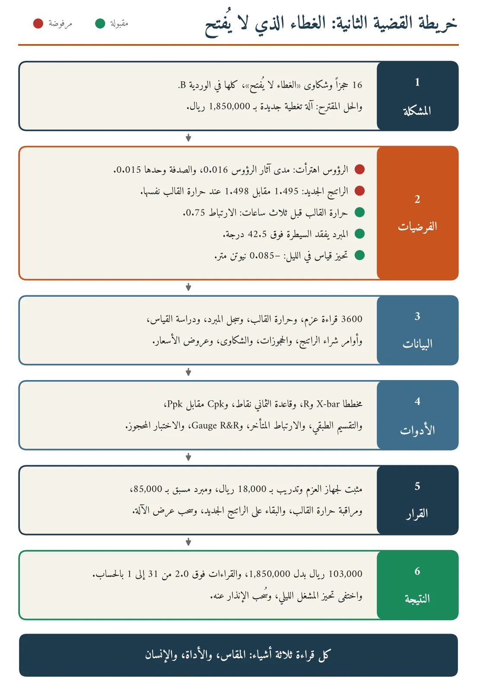
الفصل الثالثالحوض الذي لا ينام
صحار، آخر آب 2019
أين المال؟
كان سامر قد رتّب أوراقه ثلاث مرات قبل أن يدخل. وفي الورقة الأولى رقمان أحاطهما بدائرة: الحوض كان يخرج 71.0 طناً سليماً في اليوم، وصار يخرج 80.5. والطلبيات التي تُشحن في موعدها صارت كلها تقريباً، بعد أن كانت ثلثيها.
قرأ هلال، المدير العام، الورقة كلها دون أن يرفع رأسه. ثم وضعها على الطاولة.
«جيد. والآن أين المال؟».
«الحوض صار يستطيع أن...».
«سمعت. يستطيع. سألتك أين المال».
ولم يكن عند سامر جواب جاهز. فالطاقة الجديدة كانت حقيقية، والسجل يثبتها. لكن الحوض نفسه، في آب، توقف 39.8 ساعة لأنه لم يجد حزماً يجلفنها. والطلبيات الجديدة في تموز وآب كانت 64.9 طناً في اليوم، أقل مما يستطيع الحوض. وما شُحن في الشهرين كان في معظمه طلبيات قديمة تأخرت، لا مبيعات جديدة. ومقاول الدقم، أكبر عميل في المصنع، كان قد أرسل قبل أسبوع رسالة قصيرة: المرحلة القادمة من مشروعه ستذهب إلى مصنع آخر.
قال هلال: «أوقفت الخط أسبوعاً. ودفعنا غرامات لم ندفع مثلها. وخسرنا الدقم. وتقول لي إن الحوض صار أسرع. أسرع لمن؟».
وكان هذا السؤال، في ظن سامر بعد ذلك بسنوات، أهم سؤال سمعه في حياته المهنية.
قبل أربعة أشهر
الهاتف الذي لا يجيب
وصل سامر إلى صحار في الرابع عشر من نيسان 2019، يوم أحد، مهندساً لتخطيط الإنتاج في مصنع للأنابيب المجلفنة في منطقة صحار الصناعية. وكانت هذه أول وظيفة تكون فيها الخطة بيده: ما يدخل الخط، ومتى، وبأي ترتيب.
وفي المساء اتصل بيوسف. لم يجب أحد. وفي اليوم الرابع أجابت ليلى، ابنة يوسف. قالت إن أباها في المستشفى منذ أسبوعين، وإنه لا يستطيع الكلام على الهاتف، وإن الأطباء لا يعدون بشيء.
«هل أستطيع أن أفعل شيئاً؟».
«ادعُ له. وإن احتجت شيئاً، لا تتصل به. هو لا يستطيع».
وأغلق سامر الهاتف. وفي تلك الليلة لم يكتب شيئاً في دفتره. كان يعرف أسئلة يوسف كلها، أو ظن أنه يعرفها. وسيكتشف بعد أسبوع واحد أن معرفة الأسئلة شيء، وأن تسألها لنفسك حين لا يسألك أحد شيء آخر.
المصنع
يدخل الفولاذ المصنع لفائف مسطحة، ويخرج أنابيب مجلفنة في حزم، تُشحن إلى المقاولين في عُمان والإمارات. وبين الدخول والخروج محطتان مهمتان. خط التشكيل واللحام يلف الشريط الفولاذي أنبوباً ويلحم حافته، بين خمسة أطنان وستة في الساعة. وحوض الجلفنة يغمر الحزمة في زنك مصهور، حزمة واحدة في كل مرة، بين ثلاثة أطنان ونصف وأربعة وربع في الساعة. والحوض لا يُطفأ أبداً، لأن الزنك إن برد تصلب. ولذلك يسميه العمال «الحوض الذي لا ينام».
وبين الخط والحوض ساحة مكشوفة، تُرص فيها الحزم فوق بعضها، في أكوام، حتى يأتي دورها. ورافعة علوية تنقل الحزمة من الكومة إلى الحوض. وبعد الحوض مستودع شحن، تنتظر فيه الحزم المجلفنة حتى تكتمل طلبيتها.
المذكرة
في الاجتماع الأسبوعي الأول جلس سامر في آخر الطاولة. هلال في الصدر. ومنى، مديرة المبيعات، تحمل ملفاً سميكاً لا تفتحه. وسالم، مشرف خط التشكيل، اثنتان وعشرون سنة في المصنع. وأنيل، مشرف الجلفنة، من كيرالا، يجلس قرب الباب.
قالت منى: «الدقم اتصل. ثلاث شحنات متأخرة. والعقد فيه غرامة: نصف بالمئة عن كل يوم، حتى عشرة».
قال هلال: «أضفنا وردية ثالثة على الخط من أول آذار. ثلاث ورديات. ولا نزال...».
«الخط يعطي أكثر من أي وقت»، قال سالم. «شوفوا الأطنان».
ووزع هلال التقرير الشهري:
| الشهر | أطنان الخط | كفاءة الخط % | أطنان الحوض السليمة | كفاءة الحوض % |
|---|---|---|---|---|
| كانون الثاني | 1878 | 66.4 | 1860 | 66.7 |
| شباط | 2204 | 86.3 | 2014 | 79.9 |
| آذار | 2726 | 64.3 | 2148 | 77.0 |
والكفاءة هنا رقم يمكن أن يعيد القارئ حسابه: أطنان الخط ÷ (ساعات الطاقم × 5.7 طن في الساعة). في شباط، ورديتان، أي 16 ساعة في اليوم: 2204 ÷ (28 × 16 × 5.7) = 86.3%. وفي آذار، ثلاث ورديات: 2726 ÷ (31 × 24 × 5.7) = 64.3%. فالبسط زاد، والمقام زاد بالنصف.
لكن أحداً على الطاولة لم يحسب المقام. قال هلال: «الأطنان زادت، والكفاءة نزلت من ستة وثمانين إلى أربعة وستين. يعني الليل ما يشتغل». ثم التفت إلى سامر: «أنت مهندس التخطيط. أريد رأيك مكتوباً الخميس».
وكتب سامر الرأي. لم يطلب السجلات، لأن الخميس قريب، ولأنه أراد أن يبدأ بداية قوية. أخذ التقرير، ورأى ما رآه هلال، وكتب صفحة واحدة: «تشير البيانات إلى انخفاض أداء خط التشكيل بعد إضافة الوردية الليلية. يُوصى بمراجعة الإشراف على الوردية الليلية، وربط الحوافز بالكفاءة».
وفي الأحد التالي قرأها هلال بصوت مسموع. ثم قال لسالم: «حتى المهندس الجديد يرى ذلك».
لم يقل سالم شيئاً. نظر إلى سامر نظرة واحدة، ثم إلى الطاولة.
الساحة
في الصباح مشى سامر إلى الساحة لأول مرة. أكوام أعلى من قامته، وعلى كل حزمة بطاقة بيضاء بتاريخ خروجها من الخط. انحنى عند أسفل إحدى الأكوام وقرأ: السادس عشر من شباط. قبل نحو شهرين.
ثم رأى الرافعة تنزل على الكومة المجاورة، وتلتقط الحزمة التي في أعلاها. كانت بطاقتها تحمل تاريخ ذلك الصباح.
وقف هناك طويلاً. ثم عاد إلى مكتبه، وطلب السجلات.
السجل
ظل سامر يضيف إلى ما طلبه حتى صار يغطي ثمانية أشهر، من أول كانون الثاني إلى آخر آب 2019. والملفات كلها في المستودع المرافق، وقاموس أعمدتها في الملحق و:
| الملف | مصدره | الأسطر |
|---|---|---|
| orders.csv | نظام المبيعات: كل طلبية، واستلامها، وموعدها، وشحنها | 663 |
| bundles.csv | نظام تتبع الحزم: كل حزمة من الخط إلى الساحة إلى الحوض، ونتيجة الفحص النهائي | 7453 |
| kettle_stops.csv | سجل توقفات الحوض وأسبابها | 888 |
| tube_mill_shifts.csv | سجل ورديات الخط: الأطنان، وتغييرات المقاس، وحالة كاشف عيوب اللحام | 729 |
| kpi_monthly_report.csv | التقرير الشهري للإدارة | 8 |
| stations.csv | المعدلات الاسمية والقياسية للخط والحوض، ومدد التوقف المخططة | 8 |
| finance.csv | أسعار البيع والتكاليف والأجور وعروض الأسعار | 9 |
ووضع الملفات بجانب بعضها، فلم يجد أربع مفارقات. وجد اثنتين، وكانتا كافيتين.
الأولى: الوردية الثالثة زادت ما يخرج من الخط من 70.8 طناً في اليوم إلى 79.4. وما خرج سليماً من الحوض زاد من 67.4 إلى 71.0 فقط.
والثانية: من أول آذار حتى الثامن من حزيران، لم يتوقف الحوض دقيقة واحدة بسبب «لا توجد حزم». بينما كان الخط، المتهم بالكسل في مذكرته، يقضي نحو ثلث ساعات طاقمه منتظراً، لأنه لا توجد أمامه طلبيات.
قرأ سامر السطر الثاني مرتين. ثم أخرج نسخة مذكرته من الدرج، ووضعها بجانب الشاشة.
دفتر سامر
لم يكن يوسف هناك ليسأل. فصار سامر يكتب كل مساء في دفتره سؤال اليوم، وما وجده، والتاريخ. وما يلي من ذلك الدفتر، بعد أن أعاد سامر في أيلول حساب كل رقم فيه على السجل الكامل.
24 نيسان: الساحة تحكي الزمن
قانون جون ليتل: ما يتراكم في نظام مستقر = معدل ما يخرج منه × الزمن الذي يقضيه كل شيء فيه.
المخزون تحت التشغيل = معدل الإخراج × زمن البقاء
اختبرته على السجل كله أولاً، لأن الساحة بدأت الفترة شبه فارغة وانتهت فارغة: متوسط ما في الساحة 343.4 طناً، والحوض أخذ 73.3 طناً في اليوم، ومتوسط انتظار الطن 4.683 يوماً. وحاصل الضرب 343.4. القانون يعمل. وشروطه في الملحق د.
ثم على الفترتين:
| الفترة | الإخراج السليم، طن في اليوم | متوسط ما في الساحة، طن | أيام عمل محبوسة في الساحة | زمن الطلبية من الاستلام إلى الشحن، يوم | في الموعد % |
|---|---|---|---|---|---|
| ورديتان، كانون الثاني وشباط | 67.4 | 52 | 0.8 | 3.9 | 100 |
| ثلاث ورديات، آذار إلى 8 حزيران | 71.0 | 719 | 10.1 | 20.1 | 65.8 |
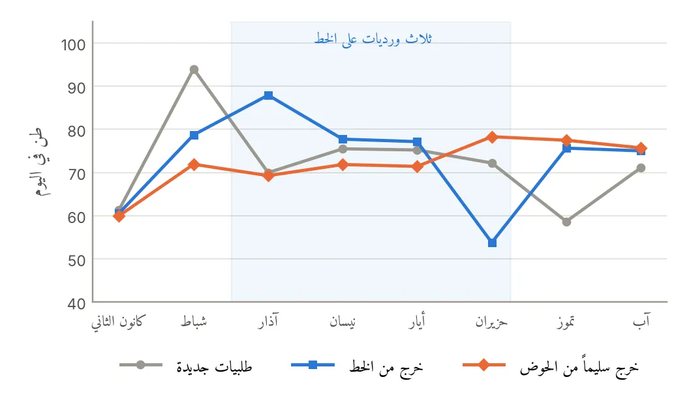
شكل 3-1: ما دخل المصنع من طلبيات، وما خرج من الخط، وما خرج سليماً من الحوض، طن في اليوم
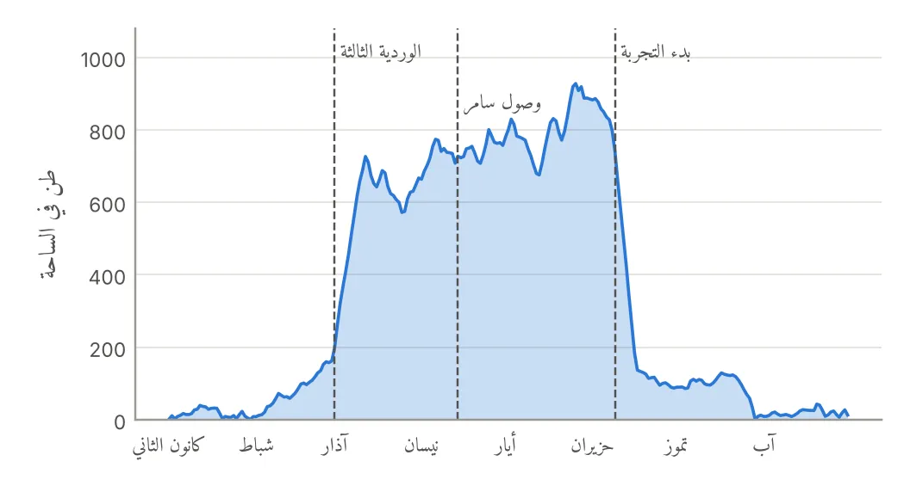
شكل 3-2: الأطنان المنتظرة في الساحة يوماً بيوم
في شباط جاءت طلبيات الدقم دفعة واحدة: 29 طلبية، 936 طناً. فارتفع ما يدخل المصنع إلى 94 طناً في اليوم، وتراكم أمام الخط 422 طناً. رأت الإدارة الطابور أمام الخط، فأضافت وردية. فاختفى الطابور من أمام الخط في أسابيع، وظهر في الساحة أكبر. الوردية لم تصنع طاقة. نقلت الانتظار إلى مكان لا يراه أحد. والأرقام شهراً بشهر في الجدول ج-1، والفترات الأربع في الجدول ج-2.
29 نيسان: أين يضيق النهر؟
القيد، بلغة غولدرات، هو المحطة التي تحدد ما يخرج من المصنع كله. والكفاءة لا تكشفه. يكشفه سؤالان: من ينتظر لأنه لا عمل أمامه؟ وأين يتكدس العمل؟
| المحطة | الساعات المتاحة | ساعات العمل الفعلي | ساعات التوقف أو تغيير المقاس | ساعات الانتظار بلا عمل |
|---|---|---|---|---|
| خط التشكيل | 2400 | 1401 | 298 | 702 |
| حوض الجلفنة | 2400 | 2018 | 382 | 0 |
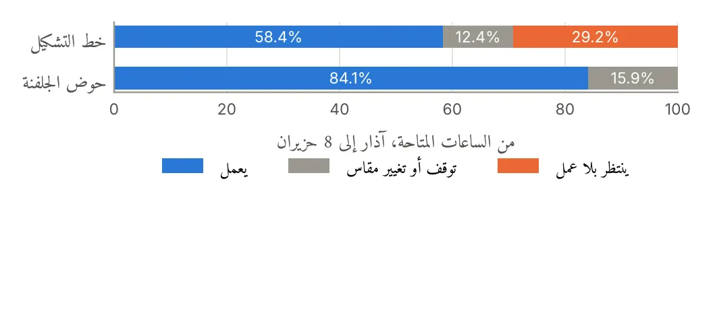
شكل 3-3: أين ذهبت ساعات خط التشكيل وساعات الحوض بين آذار وحزيران
الخط ينتظر 29.2% من ساعات طاقمه. الحوض لا ينتظر. فالقيد، في آذار ونيسان وأيار، هو الحوض. والطلب في هذه الأشهر نحو 74 طناً في اليوم، والحوض لا يُخرج إلا 71. ولو كان الطلب أقل من طاقة الحوض، لكان القيد في السوق لا في المصنع. وهذا سطر كتبته اليوم ولم أفكر فيه كثيراً.
وكتب تحته بخط أصغر: «المذكرة خاطئة في كل سطر. طاقم الليل لم يكسل. أُعطي ثماني ساعات بلا طلبيات تملؤها. والكفاءة كانت تقيس فراغهم».
2 أيار: أين تذهب ساعات الحوض؟
| أين تذهب ساعات الحوض في اليوم | ساعة |
|---|---|
| جلفنة حزم سليمة | 19.53 |
| جلفنة حزم رُفضت بعد الحوض | 0.65 |
| تسليم الوردية | 2.46 |
| تنظيف خبث الزنك | 0.97 |
| أعطال | 0.39 |
| لا توجد حزم | 0 |
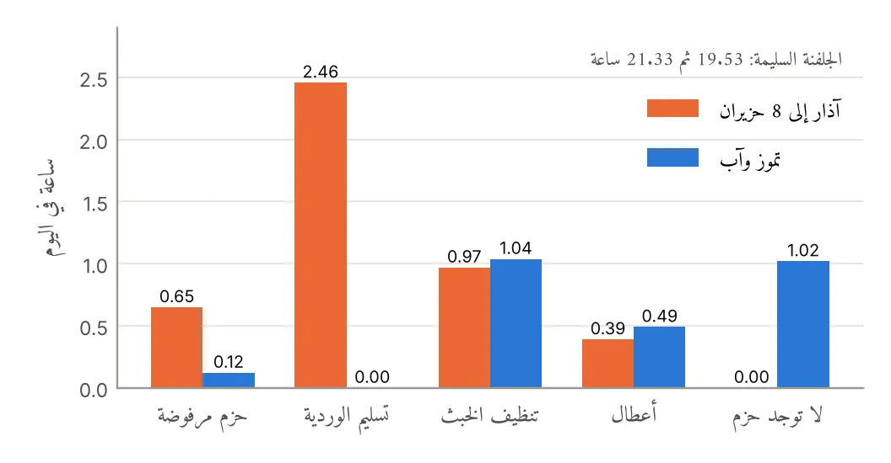
شكل 3-4: ساعات الحوض في اليوم بحسب ما حدث فيها، قبل التغيير وبعده
المخطط أن يتوقف الحوض نصف ساعة في كل تسليم من التسليمات الثلاثة. السجل: 298 توقفاً للتسليم، متوسط كل منها 49.5 دقيقة. الطاقم الذاهب لا يبدأ غمر حزمة لن ينتهي قبل خروجه، فيقف الحوض. منطق سليم عند الطاقم، ومكلف عند المصنع. والفترات كلها في الجدول ج-3.
والحوض يجلفن في المتوسط 3.63 طن في الساعة. لو اختفى توقف التسليم، وعاد الرفض إلى مستواه حين يعمل الكاشف، لصار ما يخرج سليماً نحو 81.9 طن في اليوم. أكتب هذا الرقم الآن، قبل أي تجربة، حتى لا أستطيع أن أغيّره بعدها.
6 أيار: الكاشف المطفأ
| حالة الكاشف حين صُنعت الحزمة | الحزم | المرفوضة بعد الحوض | نسبة الرفض % |
|---|---|---|---|
| يعمل ON | 3260 | 21 | 0.64 |
| مطفأ OFF | 1769 | 102 | 5.77 |
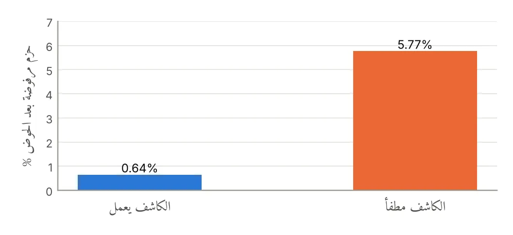
شكل 3-5: نسبة الحزم المرفوضة بعد الحوض بحسب حالة كاشف عيوب اللحام
الكاشف مطفأ في 70% من ورديات الليل بعد آذار. والتفصيل في الجدول ج-4. وكل عيب لحام يفلت من الخط يأخذ ساعة من الحوض، ثم يعود إلى الخط، ثم إلى الحوض مرة أخرى.
وذهب سامر إلى الخط في وردية الليل. كان سالم هناك، مع أن ورديته انتهت.
«جاي تكتب مذكرة ثانية؟».
«جئت أعتذر عن الأولى».
التفت سالم. لم يقل شيئاً.
«كتبتها من التقرير. قبل أن أقرأ السجل. الخط ينتظر ثلث وقته لأنه أسرع من الحوض. رجالك لم...».
«أعرف». قالها سالم بهدوء. «أنا أعرف من سنة. سألتني؟ لا. أحد سألني؟ لا». ثم أشار إلى الكاشف. «هذا يوقف الخط كل ربع ساعة. دقائق. وآخر الشهر التقرير يقول ستة وخمسين. فأطفأته. تعرف ليش؟ لأن الأطنان هي الشيء الوحيد اللي يشوفونه».
«سأقول هذا لهلال. أمام الجميع».
«قُلْه». ثم أضاف، وهو يعود إلى لوحة التحكم: «بس لا تتوقع إنه يفرق كثير».
أيار: البطاقات الملونة
قرر سامر أن يبدأ بأسهل شيء: ترتيب الساحة. فالحزم المدفونة تؤخر الطلبيات، والحل يبدو بسيطاً: الأقدم أولاً.
ففي الأول من أيار طبع بطاقات ملونة، لوناً لكل أسبوع، وعلّقها على الحزم. وأصدر تعليمات مكتوبة لمشغلي الرافعة: «يُرفع الأقدم لوناً أولاً». ولم يكلف ذلك شيئاً تقريباً.
ثم انتظر. وقبل التجربة بأيام فتح السجل ليرى النتيجة. في آذار ونيسان كانت الرافعة تأخذ أحدث حزمة في الساحة في 74.8% من المرات. ومن أول أيار حتى الثامن من حزيران، بعد البطاقات، أخذتها في 72.6%.
لا شيء تقريباً.
ونزل إلى الساحة، ووقف بجانب مشغل الرافعة ساعة. ورأى السبب بعينه. الحزمة القديمة في أسفل الكومة، وفوقها خمس حزم. لكي يصل إليها، عليه أن ينقل الخمس واحدة واحدة. والحوض ينتظر، وأنيل ينادي من الأسفل. فيأخذ المشغل الحزمة التي في الأعلى، كما يفعل كل مشغل عاقل في العالم.
كتب سامر في دفتره تلك الليلة: «التعليمات لا تهزم الجاذبية. الكومة تصنع الترتيب، لا البطاقة. والحل صفوف، لا ألوان».
ثم حسب ما كان يجب أن يحسبه قبل البطاقات:
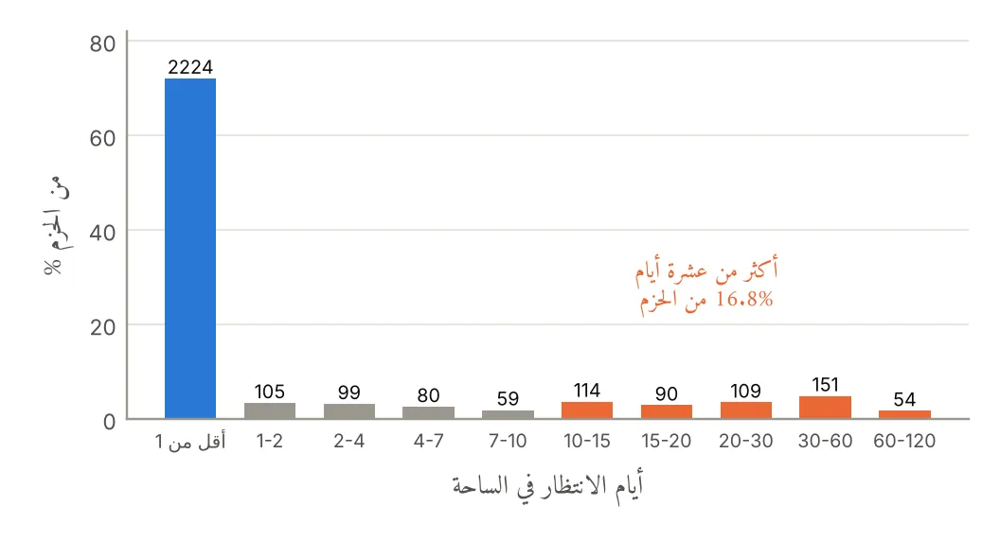
شكل 3-6: كم انتظرت الحزم في الساحة قبل الحوض، آذار إلى حزيران
| البند | آذار إلى 8 حزيران | تموز وآب |
|---|---|---|
| الحزم التي كانت الأحدث في الساحة لحظة أُخذت % | 73.9 | 3.4 |
| الحزم التي كانت الأقدم في الساحة لحظة أُخذت % | 0.1 | 47.1 |
| الوسيط، يوم | 0.05 | 0.28 |
| تسعون بالمئة من الحزم انتظرت أقل من، يوم | 20.42 | 2.34 |
| أطول انتظار، يوم | 104.1 | 7.6 |
ثم وجد ما لم يتوقعه. فالطلبية لا تُشحن حتى تكتمل حزمها كلها. وحين تُدفن حزمة واحدة في أسفل الكومة، تنتظر أخواتها المجلفنة في مستودع الشحن. فذهب إلى المستودع، وعدّ.
كان في المستودع، في المتوسط بين آذار وحزيران، 2433 طناً من الأنابيب المجلفنة الجاهزة، تنتظر كل منها حزمة ناقصة من طلبيتها، مدفونة في الساحة. وبلغ هذا الرقم ذروته، 3703 أطنان، في السابع من حزيران. وفي الفترة نفسها، كان الحوض يجلفن 71.0 طناً سليماً في اليوم، والمصنع لا يشحن إلا 41.1.
لم تكن الساحة أكبر كومة في المصنع. كانت الكومة الأكبر في المستودع، جاهزة، مدفوعة الثمن، ولا يراها أحد لأنها لا تظهر في أي تقرير. والأرقام في الجدول ج-7.
رمضان: أنيل
في إفطار في غرفة صغيرة قرب الحوض، على تمر ولبن، سأل سامر أنيل سؤالاً لم يسأله له أحد: «لو كان الحوض لك، ماذا تغيّر أولاً؟».
نظر إليه أنيل طويلاً، كأنه يقرر هل السؤال جاد.
ثم قال بعربية فيها كلمات من الهندية والإنجليزية: «التسليم. أنا قلت هذا سنة ألفين وستة عشر. كتبت ورقة. قلت: الطاقم الجديد يجي قبل نص ساعة، يمسك الحوض وهو شغال. لا وقوف. كل يوم ساعتين، ساعتين ونص، تضيع. أنا أعرف من الساعة، مش من الكمبيوتر».
«وماذا حدث؟».
«سألوني: كم يكلف؟ قلت: نص ساعة إضافي لكل طاقم. قالوا: لا. ما حد سأل: كم يوفر؟». وابتسم ابتسامة متعبة. «بعدها أنا ما أقترح. في هذا المصنع، اللي يقترح يُسأل عن الكلفة. واللي يسكت ما يُسأل».
وصمت قليلاً، ثم أضاف: «وشي ثاني. الحزم المرفوضة. أنا أعرف إنها من الليل. اللحام ليلاً مش زي النهار. لكن هذا مش شغلي. شغلي الزنك».
وفهم سامر أن الحل الذي قضى ثلاثة أسابيع يستخرجه من السجل كان موجوداً في المصنع منذ ثلاث سنوات، في ورقة رجل لا يتكلم إلا إذا سُئل. وأن ما ينقص المصنع لم يكن التحليل، بل أن يسأل أحدٌ من يعرف.
قال سامر: «في الاجتماع بعد العيد، أريدك أن تعرض الاقتراح بنفسك. باسمك».
«أنا؟ أنا ما أتكلم في الاجتماعات».
«ولهذا بالضبط».
التجربة
اجتماع ما بعد العيد
بدأ سامر الاجتماع بما لم يتوقعه أحد.
«قبل سبعة أسابيع كتبت مذكرة تقول إن الوردية الليلية لا تعمل. كانت خاطئة. كتبتها من التقرير، والسجل يقول عكسها. والخطأ خطئي، لا خطأ سالم ولا رجاله».
ساد صمت. قال هلال: «أكمل».
فعرض ما وجده بالترتيب: القيد هو الحوض. ساعتان ونصف تضيعان كل يوم في التسليم. كاشف مطفأ يرسل إلى الحوض حزماً سترفض. ساحة تدفن الحزم، ومستودع يحبس طلبيات مكتملة إلا حزمة. والبطاقات الملونة التي جربها وفشلت.
ثم قال: «والتسليم المتداخل ليس اقتراحي. أنيل اقترحه سنة 2016. وأطلب أن يعرضه هو».
وقف أنيل، وتكلم دقيقتين بجمل قصيرة. وحين جلس، سأل هلال السؤال نفسه الذي سُئله قبل ثلاث سنوات: «كم يكلف؟».
قال سامر: «ألف ومئة وخمسون ريالاً في الشهر. والوردية الليلية على الخط تكلف تسعة آلاف وأربعمئة ريال أجوراً، وثلاثة آلاف ومئة إضافيات وكهرباء».
وكانت الخطة، كما كُتبت في المحضر باسم «خطة أنيل وسامر»، خمس خطوات على طريقة غولدرات. القيد هو الحوض. ويُستغل بالتسليم المتداخل، وبكاشف لا يُطفأ. ويخضع له كل شيء: الخط يعود إلى ورديتين، ولا يبدأ طلبية جديدة إلا إذا نزلت الساحة عن 150 طناً، أي نحو يومين من عمل الحوض. والساحة تُقسم صفوفاً بحسب موعد التسليم، لا أكواماً، والرافعة تأخذ الأقرب موعداً. أما الحوض الثاني، بمليون وأربعمئة وخمسين ألف ريال، فليس الآن. وأصل هذه الخطوات في الملحق د.
قالت منى: «تريد أن توقف الخط، والعملاء ينتظرون؟».
«العملاء لا ينتظرون الخط. ينتظرون الحوض».
قال هلال: «ثلاثة أسابيع».
الخط الواقف
بدأت التجربة في التاسع من حزيران. وفي الساعة الأولى، في الثانية عشرة وخمسين دقيقة بعد منتصف الليل، رفعت الرافعة من الصف الأول الحزمة B01282، صُنعت في السادس عشر من شباط، ودخلت الحوض بعد 112.4 يوماً في الساحة.
ثم وقف خط التشكيل. فالساحة كانت فيها 780 طناً، أكثر من عشرة أيام من عمل الحوض، والقاعدة تقول إن الخط لا يبدأ طلبية جديدة حتى تنزل الساحة عن 150 طناً.
ومر الأسبوع الأول دون أن يصنع الخط تقريباً أي أنبوب. وفي حزيران كله، مرت ثمانية أيام لم يخرج فيها من الخط طن واحد. ونزلت «كفاءة» الخط في تقرير حزيران إلى 52%.
وكان في الأمر ما لا يظهر في التقرير. فالوردية الليلية أُلغيت من اليوم الأول للتجربة. ورجالها كانوا عمالاً بعقود مؤقتة، استُقدموا في آذار للوردية الجديدة. والتسعة آلاف وأربعمئة ريال التي سيكتبها سامر بعد شهرين في خانة «التوفير» كانت رواتبهم.
ذهب سامر إلى هلال في الأسبوع الأول. «رجال الليل. نحتاج بعضهم لتقسيم الساحة صفوفاً، ولفحص اللحام على الخط النهاري».
قال هلال: «احسبها».
فحسبها. وأبقى هلال بعضهم حتى نهاية عقودهم في آب، في الساحة وعلى الكاشف. ولم يجدد عقود الباقين. ورأى سامر بعضهم في آخر يوم عمل لهم، يسلمون الخوذ عند البوابة. ولم يعرف ماذا يقول لهم، فلم يقل شيئاً.
الغرامات
ثم جاءت الضربة الثانية، وكانت من صنعه وحده.
فالقاعدة الجديدة، الأقرب موعداً أولاً، أخرجت من الصفوف الأمامية حزم الطلبيات المدفونة منذ أشهر. فاكتملت فجأة طلبيات كثيرة كانت تنتظر حزمة واحدة، وشُحنت دفعة واحدة. وفي الأسابيع الثلاثة الأولى من التجربة، شحن المصنع 242.3 طناً في اليوم. ومنها 26 طلبية لمقاول الدقم، 22 متأخرة، وأطولها تأخراً بستة وتسعين يوماً. وكانت غراماتها 27,607 ريالات، أكثر من غرامات الأشهر الثلاثة التي قبلها. والطلبيات في الجدول ج-6.
وكان سامر قد حسب الحوض والساحة والرافعة. ولم يحسب العميل. لم يخبر منى أن المدفون سيظهر. ولم يكتب للمقاول. فوصلت إلى الدقم في أسبوع واحد شاحنات لم يطلب أحد موعدها، ومعها فواتير الغرامات.
دخلت منى مكتبه ووضعت الكشف أمامه.
«هذي كانت متأخرة قبل التجربة. التجربة كشفتها، ما أخرتها...».
«وكان لازم أعرف قبل العميل». لم ترفع صوتها. «أنت أخضعت الخط للحوض. ونسيت تخضع لي أنا».
وفي اليوم نفسه استدعاه هلال.
«الخط واقف. الكفاءة اثنين وخمسين. الغرامات تضاعفت. بكرة ترجع الوردية الثالثة».
«الحوض يخرج أكثر مما خرج في أي أسبوع...».
«العميل يشوف الغرامة. ما يشوف الحوض».
«أسبوع واحد».
سكت هلال طويلاً. «أسبوع. وإذا ما طلع رقمك، ترجع الوردية، وترجع أنت تكتب جداول».
وفي المساء سافر سامر ومنى إلى الدقم. جلسا مع المقاول ساعتين. لم يعتذر سامر عن الغرامات، فالعقد عقد. وضع أمامه جدولاً بكل طلبية مفتوحة له، بموعدها الجديد يوماً بيوم. قرأه الرجل بصمت، ثم قال: «أول مرة أحد من مصنعكم يعطيني تاريخ بدل اعتذار». ثم أضاف، وهو يقف: «بس المرحلة الجاية، خلني أفكر».
واتصل سامر بليلى في طريق العودة. لم يطلب أن يكلم يوسف. سأل عنه فقط. قالت: «كما هو».
وقاد بقية الطريق في صمت، ومنى نائمة في المقعد الآخر. وفكر أنه لو استطاع أن يكلم يوسف، لعرف يوسف أين أخطأ قبل أن يكمل الحكاية. ثم فكر أنه يعرف أين أخطأ. وأن هذا بالضبط ما كان يوسف سيقوله له.
هل صدق التنبؤ؟
كان على سامر أن يفصل أثر الحل عن أثر الصيف. ففي حزيران وتموز وآب يقل الطلب في عُمان، لأن العمل في المواقع المكشوفة يُمنع في ساعات الظهيرة. فلو قاس النجاح بالطلبيات وحدها، لخلط الأثرين. أما ما يخرج من الحوض في أسابيع لم يتوقف فيها لنقص الحزم، فيقيس طاقة الحوض وحدها.
| البند | طن سليم في اليوم |
|---|---|
| قبل التجربة، آذار إلى 8 حزيران | 71.0 |
| التنبؤ المكتوب في 2 أيار | 81.9 |
| الأسابيع الثلاثة الأولى من التجربة | 80.5 |
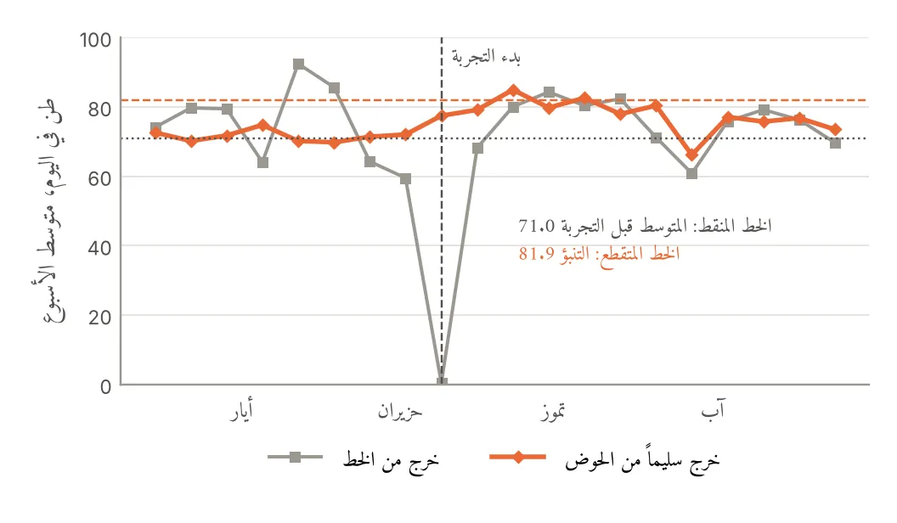
شكل 3-7: ما خرج سليماً من الحوض وما خرج من الخط أسبوعاً بأسبوع، قبل التجربة وبعدها
ولم يتوقف الحوض في تلك الأسابيع دقيقة واحدة لنقص الحزم. فالزيادة جاءت من الحوض وحده. ولم تصب الرقم تماماً: من الحزم الست عشرة التي رُفضت في تلك الأسابيع، صُنعت اثنتا عشرة قبل التجربة والكاشف مطفأ. والأسابيع واحداً واحداً في الجدول ج-5.
ولم تعد الوردية الثالثة. ونزلت الساحة في الأسبوع الثالث إلى 94 طناً، وفرغ المستودع من الحزم المنتظرة. وفي تموز وآب، شُحنت الطلبيات كلها في موعدها، وصار زمن الطلبية 5.1 أيام، بعد أن كان 20.1.
آب مرة أخرى
وهكذا عاد سامر إلى غرفة الاجتماعات في آخر آب، ليسمع هلال يسأل: أين المال؟
وكان الجواب الصادق أصعب من أي رقم في الدفتر. فالقيد لم يعد في المصنع.
في آذار وأيار كان الطلب نحو 74 طناً في اليوم، والحوض لا يُخرج إلا 71. فكان الحوض هو القيد، وكل ساعة منه تساوي دخلاً. وفي تموز وآب صار الحوض يستطيع 80.5، والطلب 64.9. فصار الحوض ينتظر الحزم ساعة في اليوم في المتوسط، وصار القيد في السوق: في عدد الطلبيات التي تجلبها منى، وفي سمعة مصنع خسر للتو أكبر عملائه. والخطوة الخامسة عند غولدرات تقول: إن انكسر القيد، فعد إلى الخطوة الأولى. ولم يكن سامر قد عاد إليها.
فأعاد كتابة ورقته أمام هلال، بلغة المقاييس الثلاثة، بصدق هذه المرة:
| المقياس | قبل | بعد | ما يعنيه |
|---|---|---|---|
| الدخل: سعر البيع ناقص الفولاذ والزنك | 93 ريالاً للطن | 93 ريالاً للطن | الطاقة الإضافية تساوي نحو 26,448 ريالاً في الشهر، لكن فقط إن بيعت. ولم تُبع بعد |
| المخزون: الساحة ومستودع الحزم المنتظرة | 996,429 ريالاً في المتوسط | 35,914 ريالاً في المتوسط | نحو 960 ألف ريال صارت نقداً بدل أنابيب منتظرة. وهذا مال حقيقي |
| نفقات التشغيل | 12,500 ريال في الشهر للوردية الليلية | 1,150 ريالاً في الشهر للتسليم المتداخل | 9,400 ريال منها كانت أجور رجال لم تُجدد عقودهم |
قال هلال بعد أن قرأها: «هذي أصدق من الأولى».
«المال الذي تحرر من المخزون حقيقي. والدخل لم يزد. والقيد الآن عند منى، لا عند أنيل».
نظر هلال إلى منى. قالت: «زمن الطلبية صار خمسة أيام. العقد يقول واحد وعشرين. أقدر أبيع خمسة أيام. بس أحتاج سنة حتى يصدقني السوق بعد الدقم».
قال هلال: «إذن أنت ومنى. القيد عندها، والتخطيط عندك. أريد خطة مبيعات مبنية على زمن الطلبية».
ثم التفت إلى سالم، الذي كان يجلس صامتاً في آخر الطاولة. «يا أبا خالد، كنت أظن إن طاقمك ما يشتغل في الليل».
«كانوا يشتغلون، يا أستاذ هلال. على الشيء الغلط». ثم أضاف دون أن ينظر إلى سامر: «والمهندس كتب العكس مرة، ومحاه بنفسه».
ولم يقل أحد شيئاً عن رجال الليل.
ما الذي سيثبت أنه أخطأ؟
كتب سامر في آخر التقرير ما يجب أن يحدث لو كان محقاً، حتى يعرف من يأتي بعده متى يكون مخطئاً:
1. سجل الحوض: لا توقف للتسليم. وإن عاد الحوض ينتظر الحزم أكثر من ساعتين في اليوم، فالقيد في السوق، والمشكلة في المبيعات لا في التخطيط.
2. سجل الورديات: الكاشف يعمل في كل وردية، والرفض أقل من واحد بالمئة.
3. قانون ليتل كل شهر: الساحة مقسومة على إخراج الحوض أقل من ثلاثة أيام. والمستودع لا يحبس حزماً تنتظر أخواتها.
4. الشتاء القادم، حين يعود الطلب إلى ما كان عليه في شباط: هل تبقى الطلبيات في موعدها دون وردية ثالثة؟ وهل يعود الدقم؟ وهذا يكتبه السوق، لا المصنع.
أيلول
في منتصف أيلول رن هاتف سامر في المساء. كان يوسف.
كان صوته أضعف، وكان يتوقف بين الجمل. قال إنه خرج من المستشفى قبل أيام، وإن ليلى حكت له أن سامر كان يتصل كل أسبوع ولا يطلب أن يكلمه.
«لماذا لم تطلب؟».
«لأنها قالت إنك لا تستطيع».
«وكيف مرّت؟».
فحكى سامر. المذكرة، وسالم، والبطاقات الملونة التي فشلت، وأنيل وورقته القديمة، والخط الواقف، ورجال الليل عند البوابة، والدقم، وهلال يسأل أين المال.
استمع يوسف دون أن يقاطع. وحين انتهى سامر، سكت يوسف طويلاً، حتى ظن سامر أن الخط انقطع.
ثم قال: «لم أكن سأعرف أكثر منك».
«كنت ستعرف عن الدقم قبل أن يحدث».
«ربما. وربما كنت سأقول لك: تكلم مع منى. وكنت ستتكلم معها لأنني قلت، لا لأنك فهمت». وسعل. «الآن فهمت. وهذا أغلى. لكنه دُفع من جيب غيرك. لا تنسَ هذا».
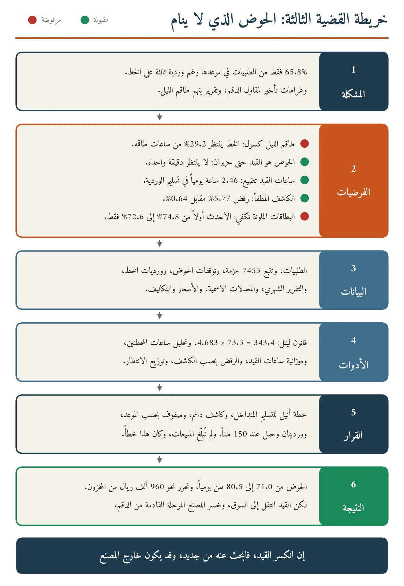
الخاتمةرسالة إلى من يختار هذه المهنة
عزيزي الطالب،
لن أعيد عليك ما قاله سامر في القضايا الثلاث. فإن كنت قرأتها، فأنت تعرفه. وإن لم تقرأها، فلن تقنعك به الخاتمة. أريد أن أكلمك عن ثلاثة أشياء لا تظهر في الجداول.
الأول أن سامر لم ينتصر في صحار. أصلح الحوض، وتحقق تنبؤه، وفرغت الساحة، ثم سأله مديره: أين المال؟ ولم يكن عنده جواب. فالقيد كان قد خرج من المصنع إلى السوق، ولم ينتبه. وأريدك أن تتذكر هذه الصفحة أكثر من أي صفحة أخرى. فأنت ستعمل غالباً في مؤسسة لا يكون الإنتاج قيدها. قيدها الطلب، أو التمويل، أو الترخيص، أو مورد واحد في الطرف الآخر من الحدود، أو معبر يُغلق دون إنذار. وأسهل شيء على مهندس شاب أن يحسّن ما يعرف كيف يحسّنه، الآلة والطابور والوردية، لأنه تعلمه في الجامعة. وأصعب شيء أن يسأل قبل ذلك: هل هذا ما يحدد ما يخرج من المؤسسة أصلاً؟
والثاني أن كل حل في هذا الكتاب دفع ثمنه أحدٌ غير سامر. دِلا كروز حمل في ملفه إنذاراً يوماً كاملاً لأن مهندساً متعباً كتب اسمه في مسودة. ورجال الوردية الليلية في صحار سلّموا خوذهم عند البوابة، ورواتبهم صارت سطراً اسمه «التوفير». ومقاول الدقم دفع غرامات لم يُخبره أحد أنها قادمة. وحين تكتب في تقريرك أن الحل «لا يكلف شيئاً»، اسأل: لا يكلف من؟ فالأرقام في هذه المهنة ليست محايدة. إنها تقرر من يُلام، ومن يُكافأ، ومن يُستغنى عنه. ومن يكتبها يحمل مسؤولية ما تقرره.
والثالث أن أفضل الحلول في هذا الكتاب لم يكتشفها سامر. كان أنيل قد كتب التسليم المتداخل في ورقة قبل ثلاث سنوات، ورُفض لأن أحداً سأل كم يكلف ولم يسأل كم يوفر. وكان دِلا كروز يعرف أن الليل منخفض منذ ثماني سنوات، ولم يسأله أحد. وكان STER-03 يقف خلف بطارية في نابلس منذ 2008، ولم ينظر إليه أحد لأنه لا يتعطل. فالمعرفة كانت في المكان كل مرة. ما كان ينقص هو أن يسأل أحدٌ من يقف أقرب إلى الآلة، وأن يصدقه حين يجيب. وستجد في كل مؤسسة تعمل فيها أنيلاً لا يتكلم إلا إذا سُئل. ابحث عنه في أسبوعك الأول، قبل أن تكتب أي مذكرة.
وكل ما بُنيت عليه هذه القضايا منشور: الملفات، والبرامج التي تولدها، والبرامج التي تحسب كل جدول وترسم كل شكل. فلا تصدق أرقام هذا الكتاب لأنها مطبوعة. افتح الملفات، وأعد الحساب، وابحث عن شيء فات سامر. وإن وجدته، فاكتبه. ففي كل بيانات شيء فات من حللها، وفي هذه البيانات أشياء فاتتني أنا أيضاً.
وإن كنت أستاذاً، فأعطِ طلابك الملفات قبل أن تعطيهم الفصل. واطلب منهم أن يجدوا الإنذار الجذري، أو القيد، أو التأخير في الصومعة، قبل أن يقرؤوا كيف وجده سامر. ثم اطلب منهم الأصعب: أن يكتبوا من دفع ثمن الحل.
وإن كنت من خارج المهنة، فخذ من الكتاب عادة واحدة: كلما عُرض عليك تفسير، اسأل من أين جاء الرقم الذي يقوم عليه.
ولا أعرف طريقة أفضل لأختم بها من كلمة يوسف الأخيرة لسامر: الفهم الذي تصل إليه وحدك أغلى من الفهم الذي يُعطى لك. لكنه يُدفع غالباً من جيب غيرك. فلا تنسَ هذا.
مع التقدير،
رامز عساف
الملحق أجداول قضية نابلس
كل الجداول في هذا الملحق محسوبة من ملفات البيانات الخام لقضية نابلس، بالبرنامج scripts/appendix_tables.py في المستودع المرافق github.com/ramizassaf/ie-three-cases. وفترة الرصد من أول أيلول 2013 حتى آخر كانون الأول 2014.
جدول أ-1: أوامر العمل التصحيحية شهرياً لكل جهاز
| الشهر | STER-01 | STER-02 | STER-03 | جهازا اللوحة DB-A2 |
|---|---|---|---|---|
| أيلول 2013 | 1 | 3 | 0 | 4 |
| تشرين الأول 2013 | 5 | 2 | 0 | 7 |
| تشرين الثاني 2013 | 3 | 2 | 0 | 5 |
| كانون الأول 2013 | 5 | 4 | 0 | 9 |
| كانون الثاني 2014 | 6 | 7 | 0 | 13 |
| شباط 2014 | 2 | 7 | 1 | 9 |
| آذار 2014 | 3 | 3 | 0 | 6 |
| نيسان 2014 | 6 | 6 | 0 | 12 |
| أيار 2014 | 3 | 1 | 0 | 4 |
| حزيران 2014 | 1 | 2 | 0 | 3 |
| تموز 2014 | 5 | 7 | 0 | 12 |
| آب 2014 | 7 | 3 | 1 | 10 |
| أيلول 2014 | 4 | 7 | 0 | 11 |
| تشرين الأول 2014 | 4 | 3 | 1 | 7 |
| تشرين الثاني 2014 | 5 | 1 | 0 | 6 |
| كانون الأول 2014 | 3 | 5 | 2 | 8 |
| المجموع | 63 | 63 | 5 | 126 |
جدول أ-2: مؤشرات الاعتمادية لكل جهاز، على الساعات التقويمية وعلى ساعات التشغيل، مع معلمات ويبل
| الجهاز | الأعطال | MTBF تقويمي، ساعة | MTBF تشغيلي، ساعة | MTTR ساعة | الإتاحة التشغيلية | الفترات | بيتا MLE | بيتا MRR | eta يوم |
|---|---|---|---|---|---|---|---|---|---|
| STER-01 | 63 | 185.5 | 112.7 | 3.59 | 97.6% | 62 | 1.13 | 1.12 | 7.9 |
| STER-02 | 63 | 185.5 | 112.7 | 3.51 | 97.4% | 62 | 1.08 | 1.11 | 7.9 |
| STER-03 | 5 | 2337.6 | 1420.4 | 3.25 | 99.8% | 4 |
الساعات التقويمية في فترة الرصد 11688 ساعة، وساعات التشغيل المجدولة 7102 ساعة: من السادسة صباحاً حتى العاشرة ليلاً من السبت إلى الخميس، ومن السادسة حتى الثانية عشرة ظهراً يوم الجمعة. والإتاحة التشغيلية هي نسبة ساعات التشغيل المجدولة التي لم يكن فيها الجهاز متوقفاً.
بيتا MLE بطريقة الإمكان الأعظم، وبيتا MRR بانحدار الرتب الوسيطة كما يُحسب في Excel. ولم تُحسب معلمات ويبل للجهاز STER-03 لأن أعطاله خمسة فقط. وطريقة الحساب مشروحة في الملحق د.
جدول أ-3: ما كتبه الفني مقابل الإنذار الجذري في سجل المتحكم، الأجهزة الثلاثة
| ما كتبه الفني | A02 انقطاع | A01 هبوط جهد | A11 الباب | A21 الحساس | بلا إنذار | المجموع |
|---|---|---|---|---|---|---|
| مولد البخار، اشتباه كلس | 54 | 10 | 0 | 0 | 0 | 64 |
| تسرب مانع الباب | 21 | 4 | 3 | 0 | 0 | 28 |
| انحراف الحرارة | 14 | 3 | 0 | 2 | 0 | 19 |
| خطأ في المتحكم | 16 | 2 | 0 | 0 | 0 | 18 |
| مشكلة كهرباء | 2 | 0 | 0 | 0 | 0 | 2 |
| المجموع | 107 | 19 | 3 | 2 | 0 | 131 |
جدول أ-4: مصدر كل أمر عمل تصحيحي، لكل جهاز
| المصدر | STER-01 | STER-02 | STER-03 |
|---|---|---|---|
| تحويل في انقطاع حقيقي للشبكة | 30 | 30 | 2 |
| تحويل في الاختبار الأسبوعي | 24 | 19 | 2 |
| هبوط جهد دون تحويل | 7 | 12 | 0 |
| عطل حقيقي في الجهاز | 2 | 2 | 1 |
| المجموع | 63 | 63 | 5 |
جدول أ-5: كل دقيقة نزل فيها أدنى جهد تحت 196 فولتاً عند مقبس STER-01
| الدقيقة | أدنى جهد | متوسط الجهد | تحويل في سجل المولد خلال دقيقتين |
|---|---|---|---|
| 2014-11-11 07:34 | 0.0 | 222.3 | نعم |
| 2014-11-11 08:06 | 0.0 | 227.1 | نعم |
| 2014-11-12 21:15 | 193.2 | 201.3 | لا |
| 2014-11-12 21:16 | 193.9 | 201.5 | لا |
| 2014-11-12 21:17 | 193.5 | 198.9 | لا |
| 2014-11-12 21:18 | 192.8 | 199.6 | لا |
| 2014-11-18 07:29 | 0.0 | 220.5 | نعم |
| 2014-11-18 08:03 | 0.0 | 220.8 | نعم |
| 2014-11-22 11:49 | 185.9 | 194.2 | لا |
| 2014-11-22 11:50 | 187.7 | 194.4 | لا |
| 2014-11-22 11:51 | 185.9 | 193.4 | لا |
| 2014-11-23 06:19 | 193.3 | 201.4 | لا |
| 2014-11-23 06:20 | 193.9 | 201.0 | لا |
| 2014-11-23 06:21 | 193.0 | 199.9 | لا |
| 2014-11-23 06:22 | 194.3 | 202.0 | لا |
| 2014-11-25 07:30 | 0.0 | 222.8 | نعم |
| 2014-11-25 08:01 | 0.0 | 223.5 | نعم |
| 2014-11-26 15:24 | 0.0 | 179.6 | نعم |
| 2014-11-26 16:04 | 0.0 | 223.3 | نعم |
| 2014-12-02 07:28 | 0.0 | 222.1 | نعم |
| 2014-12-02 07:57 | 0.0 | 225.1 | نعم |
| 2014-12-05 05:04 | 0.0 | 179.6 | نعم |
| 2014-12-05 05:55 | 0.0 | 221.1 | نعم |
الملحق بجداول قضية الرياض
محسوبة من ملفات قضية الرياض الخام: ستون يوماً من 25 حزيران 2017، بعينات فرعية من خمس قراءات كل ساعتين. والمواصفة من 1.0 إلى 2.0 نيوتن متر.
جدول ب-1: متوسط العينات الفرعية ومداها بحسب الوردية، قبل تغيير الراتنج وبعده
| الوردية | الفترة | العينات | متوسط X-bar | متوسط R | فوق الحد الأعلى | تحت الحد الأدنى |
|---|---|---|---|---|---|---|
| A | قبل تغيير الراتنج | 72 | 1.510 | 0.216 | 0 | 0 |
| A | بعده | 168 | 1.513 | 0.207 | 0 | 2 |
| B | قبل تغيير الراتنج | 72 | 1.553 | 0.213 | 6 | 0 |
| B | بعده | 168 | 1.618 | 0.213 | 50 | 0 |
| C | قبل تغيير الراتنج | 75 | 1.444 | 0.211 | 0 | 14 |
| C | بعده | 165 | 1.454 | 0.215 | 0 | 18 |
الحدود محسوبة من الستين يوماً كلها: المتوسط الكلي 1.520، ومتوسط المدى 0.212، والحد الأعلى 1.643، والحد الأدنى 1.398. والورديات: A من السادسة صباحاً، وB من الثانية ظهراً، وC من العاشرة ليلاً.
جدول ب-2: اليوم المتوسط ساعة بساعة: حرارة الهواء، وماء المبرد، والقالب، والعزم
| الساعة | الهواء °م | ماء المبرد °م | القالب °م | متوسط X-bar |
|---|---|---|---|---|
| 00:00 | 30.3 | 12.0 | 24.5 | 1.456 |
| 02:00 | 30.3 | 12.0 | 24.5 | 1.453 |
| 04:00 | 30.3 | 12.0 | 24.5 | 1.443 |
| 06:00 | 30.3 | 12.0 | 24.5 | 1.509 |
| 08:00 | 30.3 | 12.0 | 24.5 | 1.511 |
| 10:00 | 32.4 | 12.0 | 24.5 | 1.509 |
| 12:00 | 38.6 | 12.0 | 24.5 | 1.517 |
| 14:00 | 43.0 | 14.2 | 26.2 | 1.529 |
| 16:00 | 43.2 | 14.5 | 27.9 | 1.537 |
| 18:00 | 39.1 | 12.0 | 24.6 | 1.704 |
| 20:00 | 32.9 | 12.0 | 24.5 | 1.625 |
| 22:00 | 30.3 | 12.0 | 24.5 | 1.452 |
لاحظ أن الهواء يبلغ ذروته قرب الثالثة عصراً، والقالب كذلك، بينما يبلغ العزم ذروته في الساعة الثامنة عشرة. وهذا التأخير، نحو ثلاث ساعات، هو متوسط بقاء الأغطية في الصومعة.
جدول ب-3: جدول تحليل التباين لدراسة القياس، 10 دفعات × 3 مشغلين × 3 عبوات
| المصدر | درجات الحرية | مجموع المربعات | متوسط المربعات |
|---|---|---|---|
| الدفعات | 9 | 2.2982 | 0.2554 |
| المشغلون | 2 | 0.1761 | 0.0881 |
| تفاعل الدفعة والمشغل | 18 | 0.0399 | 0.0022 |
| التكرار، أي الخطأ | 60 | 0.1993 | 0.0033 |
جدول ب-4: مكونات التباين في دراسة القياس
| المكون | الانحراف المعياري | من التباين الكلي | من الانحراف الكلي |
|---|---|---|---|
| التكرار، الجهاز | 0.058 | 9.7% | 31.1% |
| إعادة الإنتاج، المشغلون مع التفاعل | 0.053 | 8.3% | 28.9% |
| نظام القياس كله GRR | 0.079 | 18.0% | 42.5% |
| الدفعات نفسها | 0.168 | 82.0% | 90.5% |
نسبة نظام القياس من عرض المواصفة: 6 × 0.079 ÷ 1.0 = 47.2%. وعدد الفئات المميزة: 1.41 × 0.168 ÷ 0.079 = 3.0. والنسبة التي تُقارن بحدود الدليل المعتمد هي نسبة الانحراف، في العمود الأخير.
جدول ب-5: الحجوزات الست عشرة، 2017، وكلها من دفعات الوردية B
| الحجز | اليوم | الساعة | الدفعة | أعلى قراءة | الكراتين | فوق 2.0 عند إعادة الفحص | القرار |
|---|---|---|---|---|---|---|---|
| H-001 | 17 تموز | 16:38 | 20170717 | 2.095 | 3000 | 0 من 32 | أُفرج عنها بعد إعادة الفحص |
| H-002 | 17 تموز | 18:31 | 20170717 | 2.151 | 3000 | 28 من 32 | أعيدت تغطيتها |
| H-003 | 18 تموز | 18:31 | 20170718 | 2.095 | 3000 | 12 من 32 | أعيدت تغطيتها |
| H-004 | 20 تموز | 18:21 | 20170720 | 2.138 | 3000 | 0 من 32 | أُفرج عنها بعد إعادة الفحص |
| H-005 | 2 آب | 18:18 | 20170802 | 2.072 | 3000 | 4 من 32 | أعيدت تغطيتها |
| H-006 | 3 آب | 18:16 | 20170803 | 2.090 | 3000 | 25 من 32 | أعيدت تغطيتها |
| H-007 | 3 آب | 20:07 | 20170803 | 2.026 | 3000 | 4 من 32 | أعيدت تغطيتها |
| H-008 | 4 آب | 18:28 | 20170804 | 2.125 | 3000 | 12 من 32 | أعيدت تغطيتها |
| H-009 | 12 آب | 18:17 | 20170812 | 2.196 | 3000 | 2 من 32 | أعيدت تغطيتها |
| H-010 | 13 آب | 18:22 | 20170813 | 2.155 | 3000 | 14 من 32 | أعيدت تغطيتها |
| H-011 | 14 آب | 18:28 | 20170814 | 2.087 | 3000 | 26 من 32 | أعيدت تغطيتها |
| H-012 | 14 آب | 20:23 | 20170814 | 2.076 | 3000 | 0 من 32 | أُفرج عنها بعد إعادة الفحص |
| H-013 | 17 آب | 20:08 | 20170817 | 2.175 | 3000 | 4 من 32 | أعيدت تغطيتها |
| H-014 | 18 آب | 18:28 | 20170818 | 2.092 | 3000 | 14 من 32 | أعيدت تغطيتها |
| H-015 | 19 آب | 18:09 | 20170819 | 2.013 | 3000 | 12 من 32 | أعيدت تغطيتها |
| H-016 | 20 آب | 18:40 | 20170820 | 2.123 | 3000 | 2 من 32 | أعيدت تغطيتها |
جدول ب-6: شكاوى العملاء، كلها عن صعوبة فتح الغطاء، وكلها من دفعات الوردية B
| الشكوى | تاريخ الاستلام | الدفعة | العميل | العبوات |
|---|---|---|---|---|
| CC-001 | 2017-07-13 | 20170704 | Office Water Delivery | 72 |
| CC-002 | 2017-07-22 | 20170717 | Riyadh Hypermarkets | 101 |
| CC-003 | 2017-07-23 | 20170720 | Al-Waha Stores | 131 |
| CC-004 | 2017-07-24 | 20170716 | Riyadh Hypermarkets | 44 |
| CC-005 | 2017-08-07 | 20170730 | Riyadh Hypermarkets | 45 |
| CC-006 | 2017-08-07 | 20170801 | Riyadh Hypermarkets | 60 |
| CC-007 | 2017-08-14 | 20170805 | Office Water Delivery | 27 |
| CC-008 | 2017-08-21 | 20170815 | Office Water Delivery | 141 |
| CC-009 | 2017-08-24 | 20170815 | Al-Waha Stores | 27 |
| CC-010 | 2017-08-27 | 20170822 | Al-Waha Stores | 43 |
| CC-011 | 2017-08-29 | 20170819 | Al-Waha Stores | 24 |
| CC-012 | 2017-08-30 | 20170820 | Office Water Delivery | 135 |
الملحق ججداول قضية صحار
محسوبة من ملفات قضية صحار الخام، من أول كانون الثاني حتى آخر آب 2019. والطن في هذه الجداول طن أنابيب.
جدول ج-1: المصنع شهراً بشهر
| الشهر | طلبيات جديدة طن/يوم | الخط طن/يوم | الحوض السليم طن/يوم | الساحة آخر الشهر طن | زمن الطلبية يوم | في الموعد % | كفاءة الخط في التقرير % | كفاءة الحوض في التقرير % |
|---|---|---|---|---|---|---|---|---|
| كانون الثاني | 61.4 | 60.6 | 60.0 | 8 | 2.3 | 100.0 | 66.4 | 66.7 |
| شباط | 94.0 | 78.7 | 71.9 | 178 | 5.6 | 100.0 | 86.3 | 79.9 |
| آذار | 70.0 | 87.9 | 69.3 | 661 | 8.3 | 81.2 | 64.3 | 77.0 |
| نيسان | 75.5 | 77.7 | 71.9 | 770 | 11.4 | 79.2 | 56.8 | 79.8 |
| أيار | 75.2 | 77.2 | 71.4 | 893 | 31.3 | 50.0 | 56.4 | 79.4 |
| حزيران | 72.2 | 53.8 | 78.3 | 103 | 45.3 | 30.6 | 52.0 | 87.0 |
| تموز | 58.7 | 75.7 | 77.5 | 31 | 6.9 | 100.0 | 83.0 | 86.1 |
| آب | 71.1 | 75.0 | 75.7 | 0 | 2.7 | 100.0 | 82.3 | 84.1 |
جدول ج-2: قانون ليتل في الفترات الأربع
| الفترة | من إلى | الحوض السليم طن/يوم | متوسط الساحة طن | الساحة ÷ الإخراج يوم | متوسط انتظار الطن يوم | زمن الطلبية يوم | في الموعد % |
|---|---|---|---|---|---|---|---|
| ورديتان | 6 كانون الثاني إلى 28 شباط | 67.4 | 52 | 0.8 | 0.53 | 3.9 | 100.0 |
| ثلاث ورديات | 1 آذار إلى 8 حزيران | 71.0 | 719 | 10.1 | 5.81 | 20.1 | 65.8 |
| أسابيع التجربة الأولى | 9 حزيران إلى 30 حزيران | 80.5 | 239 | 3.0 | 19.46 | 47.7 | 27.3 |
| بعد التجربة | 1 تموز إلى 31 آب | 76.6 | 55 | 0.7 | 0.77 | 5.1 | 100.0 |
الفترة الثالثة لا تحقق شرط الاستقرار في قانون ليتل، لأن الساحة كانت تفرغ خلالها. ولهذا يختلف فيها العمودان الخامس والسادس اختلافاً كبيراً. أما على الفترة كلها، من أول كانون الثاني حتى آخر آب، فينطبق القانون تماماً، كما في الفصل الثالث.
جدول ج-3: ساعات الحوض في اليوم في الفترات الأربع
| الفترة | جلفنة سليمة | جلفنة مرفوضة | تسليم الوردية | تنظيف الخبث | أعطال | لا توجد حزم |
|---|---|---|---|---|---|---|
| ورديتان | 18.63 | 0.15 | 2.28 | 0.95 | 0.51 | 1.49 |
| ثلاث ورديات | 19.53 | 0.65 | 2.46 | 0.97 | 0.39 | 0.00 |
| أسابيع التجربة الأولى | 21.97 | 0.46 | 0.00 | 0.97 | 0.60 | 0.00 |
| بعد التجربة | 21.33 | 0.12 | 0.00 | 1.04 | 0.49 | 1.02 |
جدول ج-4: نسبة الورديات التي أُطفئ فيها كاشف عيوب اللحام، ونسبة الرفض بعد الحوض
| الفترة | الوردية A % | الوردية B % | الوردية C % | حزم مرفوضة % |
|---|---|---|---|---|
| ورديتان | 7.4 | 5.6 | لا وردية | 0.94 |
| ثلاث ورديات | 39.0 | 38.0 | 70.0 | 3.24 |
| بعد التجربة | 0.0 | 0.0 | لا وردية | 0.56 |
جدول ج-5: الأسابيع حول التجربة، وقد بدأت يوم 9 حزيران
| الأسبوع يبدأ | الحوض السليم طن/يوم | الخط طن/يوم | الساحة آخر الأسبوع طن | ساعات الحوض بلا حزم |
|---|---|---|---|---|
| 19 أيار | 69.8 | 85.6 | 942 | 0.0 |
| 26 أيار | 71.4 | 64.3 | 885 | 0.0 |
| 2 حزيران | 72.0 | 59.5 | 780 | 0.0 |
| 9 حزيران | 77.4 | 0.4 | 222 | 0.0 |
| 16 حزيران | 79.1 | 68.2 | 131 | 0.0 |
| 23 حزيران | 84.9 | 80.0 | 94 | 0.0 |
| 30 حزيران | 79.8 | 84.3 | 125 | 0.0 |
| 7 تموز | 82.6 | 80.3 | 105 | 0.0 |
| 14 تموز | 77.9 | 82.3 | 133 | 0.0 |
| 21 تموز | 80.4 | 71.2 | 65 | 0.0 |
| 28 تموز | 66.1 | 60.8 | 25 | 32.2 |
جدول ج-6: طلبيات مقاول الدقم وغرامات التأخير
| الفترة | طلبيات شُحنت | متأخرة | أطول تأخير يوم | الغرامة بالريال |
|---|---|---|---|---|
| ورديتان | 23 | 0 | 0 | 0 |
| ثلاث ورديات | 28 | 16 | 74 | 16,825 |
| أسابيع التجربة الأولى | 26 | 22 | 96 | 27,607 |
| بعد التجربة | 30 | 0 | 0 | 0 |
كفاءة الخط في التقرير = أطنان الخط في الشهر ÷ (ساعات الطاقم × 5.7 طن في الساعة)، وكفاءة الحوض = أطنانه السليمة ÷ (24 ساعة × أيام الشهر × 3.75). فشباط مثلاً: 2204 ÷ (28 يوماً × 16 ساعة × 5.7) = 86.3%. والمعدلان القياسيان في الملف stations.csv.
جدول ج-7: المخزون في مكانين: الساحة قبل الحوض، وحزم مجلفنة تنتظر اكتمال طلبيتها
| الفترة | الساحة، طن | قيمتها بالريال | مجلفنة تنتظر، طن | قيمتها بالريال | المجموع بالريال |
|---|---|---|---|---|---|
| ثلاث ورديات | 719 | 212,912 | 2433 | 783,517 | 996,429 |
| بعد التجربة | 55 | 16,368 | 61 | 19,546 | 35,914 |
قيمة الساحة بتكلفة المواد قبل الزنك، 296 ريالاً للطن، وقيمة الحزم المجلفنة بتكلفة الفولاذ والزنك، 322 ريالاً للطن، كما في الملف finance.csv. والحزمة المجلفنة لا تُشحن حتى تكتمل كل حزم طلبيتها.
الملحق دللقارئ الجاد، المفاهيم بتفصيل أكبر
هذا الملحق لمن يريد أن يذهب أبعد من القصة. وفيه المفاهيم التي استعملها سامر في القضايا الثلاث، مرتبة بحسب ظهورها في الكتاب. ولكل مفهوم: تعريفه، وصيغته، ومثال من الكتاب، والخطأ الشائع في استعماله، ومراجع للاستزادة. والأرقام بين معقوفين تحيل إلى قائمة المراجع في آخر الكتاب.
د-1: متوسط الزمن بين الأعطال، ومتوسط زمن الإصلاح، والإتاحة
ظهرت في الفصل الأول، الخطوة الثالثة.
MTBF = ساعات فترة الرصد ÷ عدد الأعطال
MTTR = مجموع أزمنة الإصلاح ÷ عدد الأعطال
الإتاحة = MTBF ÷ (MTBF + MTTR)
المثال: رُصد STER-01 مدة 11688 ساعة تقويمية، منها 7102 ساعة تشغيل مجدولة، وتعطل 63 مرة. فمتوسط الزمن بين أعطاله 185.5 ساعة على الساعات التقويمية، و112.7 ساعة على ساعات التشغيل، أي سبعة أيام عمل. انظر الجدول أ-2.
والخطأ الشائع الأول هو هذا بالضبط: أن تُقسم الساعات التقويمية على الأعطال، والجهاز لا يعمل إلا جزءاً منها. فالأعطال لا تقع إلا والجهاز يعمل. ومن يحسب على الساعات التقويمية يحصل على جهاز يبدو أصح بالثلث مما هو. فاسأل دائماً قبل أي حساب: أي ساعات أقصد؟
والخطأ الثاني أن يُفهم متوسط الزمن بين الأعطال على أنه عمر الجهاز. فهو ليس كذلك. إنه معدل، لا عمر. وجهاز متوسط الزمن بين أعطاله سنة، قد يعمل عشرين سنة إن كان يُصلح بعد كل عطل.
والخطأ الثالث أن يُظن أن نصف الأجهزة يصل إلى هذا المتوسط دون عطل. فإن كانت الأعطال عشوائية بمعدل ثابت، أي تتبع التوزيع الأسي، فإن احتمال أن يعمل الجهاز حتى يبلغ متوسط الزمن بين الأعطال دون عطل هو 36.8% فقط، لا خمسون بالمئة.
والخطأ الرابع أن تُقرأ الإتاحة وحدها. فإتاحة 97.6% تبدو ممتازة، لكنها في قضية نابلس كانت تعني توقفاً كل سبعة أيام عمل، وإلغاء دورة تعقيم في كل مرة. فالإتاحة تقيس نسبة الوقت، ولا تقيس عدد المرات. وفي العمليات التي يكون كل توقف فيها مكلفاً بذاته، يجب أن يُقرأ عدد التوقفات بجانب الإتاحة.
وتفرق كتب الاعتمادية بين الإتاحة الذاتية، التي تحسب زمن الإصلاح الفعلي فقط، والإتاحة التشغيلية، التي تحسب كل الزمن من لحظة التوقف حتى العودة، بما فيه انتظار الفني والقطع. وفي الكتاب حُسب زمن التوقف من لحظة البلاغ حتى نهاية الإصلاح، داخل ساعات التشغيل المجدولة فقط، فهي إتاحة تشغيلية.
للاستزادة: [1].
د-2: توزيع ويبل
ظهر في الفصل الأول، الخطوة الخامسة.
احتمال البقاء حتى الزمن t: R(t) = exp(−(t ÷ eta)^beta)
معدل العطل اللحظي: h(t) = (beta ÷ eta) × (t ÷ eta)^(beta − 1)
ومعلمة الشكل بيتا هي أهم ما في التوزيع، لأنها تحدد كيف يتغير معدل العطل مع الزمن:
| قيمة بيتا | معدل العطل | التفسير العملي | ما يفيد في الصيانة |
|---|---|---|---|
| أقل من 1 | يتناقص مع الزمن | أعطال مبكرة: عيوب تصنيع أو تركيب | فحص الاستلام والتشغيل الأولي، لا الاستبدال الوقائي |
| قريبة من 1 | ثابت | أعطال عشوائية من سبب خارجي | إزالة السبب الخارجي، لا الاستبدال الوقائي |
| أكبر من 1، وخاصة فوق 2 | يتزايد مع الزمن | اهتراء | الاستبدال الوقائي قبل نهاية العمر |
ومعلمة المقياس eta هي الزمن الذي يتعطل قبله 63.2% من الوحدات، مهما كانت بيتا.
ويُقدّر التوزيع بطريقتين، استعملهما سامر كلتيهما.
الطريقة الأولى انحدار الرتب الوسيطة، وهي الطريقة التي يمكن تطبيقها في Excel. تُرتب الفترات بين الأعطال تصاعدياً، وتُعطى كل فترة رتبة i من 1 إلى n، ثم يُحسب لها احتمال تراكمي تقريبي بصيغة برنارد:
F = (i − 0.3) ÷ (n + 0.4)
x = ln(t)، y = ln(−ln(1 − F))، وبيتا = ميل الخط المستقيم بين y وx
الطريقة الثانية الإمكان الأعظم، وهي أدق في العينات الكبيرة، لكنها تحتاج إلى حل معادلة بالتكرار:
1 ÷ beta + متوسط ln(t) − مجموع(t^beta × ln t) ÷ مجموع(t^beta) = 0
ثم: eta = (مجموع t^beta ÷ n)^(1 ÷ beta)
المثال: للجهاز STER-01 جاءت بيتا 1.13 بالطريقة الثانية و1.12 بالأولى، وeta 7.9 أيام. أي معدل عطل شبه ثابت. انظر الجدول أ-2.
والخطأ الشائع هنا أدق مما يبدو. فتوزيع ويبل وُضع أصلاً لأعمار وحدات متماثلة جديدة، تعمل كل منها حتى تتعطل. أما الفترات بين أعطال جهاز واحد يُصلح ويعود، فشيء آخر. واستعمال ويبل عليها يفترض أن الإصلاح يعيد الجهاز جديداً. فإن كان الجهاز يهترئ رغم الإصلاح، فالأفضل اختبار الاتجاه مباشرة: هل تقصر الفترات بين الأعطال مع الزمن؟ ويُستعمل لذلك اختبار لابلاس أو نموذج Crow-AMSAA. وفي قضية نابلس لم تظهر علامة اهتراء، والزيادة التي ظهرت في الأعطال جاءت دفعة واحدة مع بدء الاختبار الأسبوعي للمولد، أي من سبب خارجي، فكان استعمال ويبل مقبولاً لغرضه: إغلاق باب العمر.
للاستزادة: [2]، وعن الأنظمة القابلة للإصلاح [3]، وعن صيغة برنارد [4].
د-3: مخططات ضبط الجودة X-bar وR
ظهرت في الفصل الثاني، الخطوة الأولى.
تؤخذ عينات فرعية صغيرة، خمس قراءات في قضية الرياض، كل ساعتين. ولكل عينة يُحسب متوسطها X-bar ومداها R. ثم:
حدود مخطط X-bar = المتوسط الكلي ± A2 × متوسط المدى
حدود مخطط R: الأدنى = D3 × متوسط المدى، والأعلى = D4 × متوسط المدى
| حجم العينة الفرعية | A2 | D3 | D4 | d2 |
|---|---|---|---|---|
| 2 | 1.880 | 0 | 3.267 | 1.128 |
| 3 | 1.023 | 0 | 2.574 | 1.693 |
| 4 | 0.729 | 0 | 2.282 | 2.059 |
| 5 | 0.577 | 0 | 2.114 | 2.326 |
| 6 | 0.483 | 0 | 2.004 | 2.534 |
وفكرة العينة الفرعية العقلانية هي مفتاح المخطط كله. فالقراءات داخل العينة الواحدة يجب أن تؤخذ في ظروف واحدة، في دقائق متقاربة، حتى يقيس مداها التغير الطبيعي وحده. والتغير بين العينات هو ما يبحث عنه المخطط. ولو خُلطت في العينة الواحدة قراءات من ورديتين، لاتسع المدى، واتسعت الحدود، واختفت الأسباب الخاصة.
وللمخطط قواعد غير الخروج عن الحدود، أشهرها قواعد Western Electric، منها: ثماني نقاط متتالية في جانب واحد من الخط المركزي، ونقطتان من ثلاث متتالية خلف خط الانحرافين المعياريين في جانب واحد، وأربع من خمس خلف خط الانحراف الواحد. وبعض المراجع، كقواعد نيلسون، تجعل العدد في القاعدة الأولى تسعاً لا ثمانياً.
والخطأ الشائع أن يُظن أن كل نقطة خارج الحدود عيب في المنتج. فحدود الضبط تصف العملية، لا المواصفة. والنقطة خارج حدود الضبط قد تكون داخل المواصفة تماماً، لكنها تقول إن شيئاً تغير. وفي عملية مستقرة تماماً، تخرج نقطة واحدة من كل 370 نقطة تقريباً عن حدود الثلاثة انحرافات بالصدفة وحدها.
للاستزادة: [5]، وعن قواعد الأنماط [6] و[7].
د-4: مؤشرات القدرة Cp وCpk وPp وPpk
ظهرت في الفصل الثاني، الخطوة الثانية.
الانحراف داخل العينات = متوسط المدى ÷ d2
Cp = (الحد الأعلى للمواصفة − الحد الأدنى) ÷ (6 × الانحراف داخل العينات)
Cpk = أصغر المسافتين من المتوسط إلى حدي المواصفة ÷ (3 × الانحراف داخل العينات)
Pp وPpk بالصيغتين نفسيهما، مع الانحراف المعياري الكلي لكل القراءات
وإن كانت العملية مستقرة وتوزيعها طبيعياً، فإن Cpk يعطي تقديراً لنسبة المعيب خلف أقرب حد:
| Cpk | نسبة المعيب خلف أقرب حد، جزء في المليون |
|---|---|
| 1.00 | 1350 |
| 1.33 | 32 |
| 1.67 | 0.3 |
والفرق بين Cpk وPpk هو أهم ما في هذا الباب. فـ Cpk يقيس ما تستطيعه العملية لو بقيت كما هي داخل العينة الواحدة. وPpk يقيس ما فعلته فعلاً عبر الزمن. فإن تقاربا، فالعملية مستقرة. وإن تباعدا، كما في الرياض، 1.75 مقابل 1.18، فالعملية تتحرك، ولا معنى لأي منهما قبل أن تستقر.
وفي قضية الرياض درس إضافي لم يذكره الفصل. فـ Ppk يساوي 1.18 يعني، لو كان التوزيع طبيعياً، نحو 200 جزء في المليون فوق الحد الأعلى. لكن الذي وقع فعلاً 31 قراءة من 3600، أي نحو 8611 جزءاً في المليون، أكثر من أربعين ضعفاً. والسبب أن القراءات لم تأتِ من توزيع طبيعي واحد، بل من خليط: أيام باردة وأيام حارة، ووردية تقرأ أقل وورديتان تقرآن أدق. والخليط له ذيل أثقل من أي توزيع طبيعي. فتحويل مؤشر القدرة إلى نسبة معيب لا يصح إلا بعد التأكد من الاستقرار ومن شكل التوزيع.
للاستزادة: [5] و[8].
د-5: دراسة نظام القياس بطريقة تحليل التباين
ظهرت في الفصل الثاني، الخطوة الرابعة.
في الدراسة النموذجية يقيس عدد من المشغلين، ثلاثة في العادة، عدداً من القطع، عشراً في العادة، كل قطعة عدة مرات، مرتين أو ثلاثاً، دون أن يعرفوا أي قطعة يقيسون. ثم تُفصل القراءات بتحليل التباين إلى أربعة مصادر: القطع، والمشغلين، والتفاعل بينهما، والتكرار. ومن متوسطات المربعات تُستخرج مكونات التباين، حيث p عدد القطع، وo عدد المشغلين، وr عدد التكرارات:
تباين التكرار = متوسط مربعات الخطأ
تباين التفاعل = (متوسط مربعات التفاعل − متوسط مربعات الخطأ) ÷ r
تباين المشغلين = (متوسط مربعات المشغلين − متوسط مربعات التفاعل) ÷ (p × r)
تباين القطع = (متوسط مربعات القطع − متوسط مربعات التفاعل) ÷ (o × r)
تباين نظام القياس = التكرار + المشغلون + التفاعل
ثم ثلاثة مؤشرات:
نسبة نظام القياس من الانحراف الكلي = انحراف نظام القياس ÷ الانحراف الكلي
نسبة نظام القياس من المواصفة = 6 × انحراف نظام القياس ÷ عرض المواصفة
عدد الفئات المميزة = 1.41 × انحراف القطع ÷ انحراف نظام القياس
والحدود المعتمدة في دليل تحليل أنظمة القياس: أقل من 10% مقبول، ومن 10% إلى 30% مقبول بشروط، وأكثر من 30% غير مقبول. وعدد الفئات المميزة يجب أن يكون خمساً أو أكثر.
المثال: في الرياض جاءت النسبة 42.5%، وعدد الفئات 3.0. انظر الجدولين ب-3 وب-4.
والخطأ الشائع أن تُحسب النسبة الأولى بالتباين لا بالانحراف. فالتباين يُجمع، والانحراف لا يُجمع. ولذلك تجمع مكونات التباين في الجدول ب-4 إلى مئة بالمئة، بينما لا تجمع نسب الانحراف. والدليل المعتمد يقارن نسبة الانحراف بحدوده، لا نسبة التباين. ومن خلط بينهما، رأى نظام قياس سيئاً، 42.5%، على أنه مقبول بشروط، 18%.
وتحليل التباين لا يكشف التحيز، أي الفرق الثابت بين قراءة المشغل والقيمة الحقيقية، إلا إن وُجدت قيمة مرجعية من مختبر معايرة. وقد كان هذا المرجع هو ما كشف تحيز دِلا كروز.
وإن كان الاختبار يتلف العينة، كعزم الفتح الأول، فلا يقيس أحد القطعة نفسها مرتين. والحل الشائع أن تُعامل دفعة متجانسة كأنها قطعة واحدة: عبوات متتالية من الآلة نفسها في الدقيقة نفسها، يأخذ كل مشغل منها عدداً، ويأخذ المختبر الباقي. والحساب كما هو، لكن التكرار يحمل معه الفرق بين عبوات الدفعة، فتصير نسبة نظام القياس حداً أعلى. وهذا ما فعله سامر في الرياض.
للاستزادة: [9].
د-6: التقسيم الطبقي والخلط
ظهر في الفصل الثاني، الخطوة الثالثة.
الخلط أن يتغير عاملان معاً، فيُنسب أثرهما إلى أحدهما. وفي الرياض، تغير المورد في الأسبوع نفسه الذي بدأت فيه موجات الحر. فالمقارنة الساذجة، قبل التغيير وبعده، أعطت فرقاً: 1.502 مقابل 1.529. لكن المقارنة بعد التقسيم بحسب حرارة القالب، أي مقارنة الراتنجين عند الحرارة نفسها، أعطت 1.495 مقابل 1.498. أي لا فرق.
وأشهر صور الخلط ما يسمى مفارقة سمبسون: أن يظهر اتجاه في كل مجموعة على حدة، ثم يظهر الاتجاه المعاكس حين تُجمع المجموعات. والسبب دائماً عامل ثالث يختلف توزيعه بين المجموعات.
والتقسيم الطبقي هو العلاج حين تكون البيانات قد جُمعت سلفاً. أما حين يمكن التخطيط للتجربة، فالعلاج الأقوى هو التصميم التجريبي: أن يُغير العامل عمداً، في ظروف متوازنة، حتى لا يختلط بغيره.
للاستزادة: [10]، والورقة الأصلية عن المفارقة [11].
د-7: الارتباط المتأخر والاختبار على بيانات محجوزة
ظهرا في الفصل الثاني، الخطوتين الثالثة والخامسة.
الارتباط المتأخر أن نحسب معامل الارتباط بين متغير اليوم ومتغير آخر قبل L من الساعات أو الأيام، ونكرر الحساب لقيم مختلفة من L. والتأخير الذي يبلغ عنده الارتباط ذروته يشير إلى زمن انتقال الأثر. وفي الرياض كانت الذروة عند ثلاث ساعات، 0.75، وهو متوسط بقاء الأغطية في الصومعة.
والخطأ الشائع أن يُعامل الارتباط المتأخر كدليل على السببية. فالمتغيرات التي تتبع دورة يومية، كالحرارة، ترتبط بكل ما يتبع دورة يومية. ولا يكتمل الدليل إلا بآلية فيزيائية تفسر التأخير، كالصومعة، وبتنبؤ يُختبر.
والاختبار على بيانات محجوزة يعني أن يُبنى النموذج على جزء من البيانات، خمسين يوماً في الرياض، ثم يُختبر على جزء لم يره، الأيام العشرة الأخيرة. ويُقاس الخطأ بالجذر التربيعي لمتوسط مربع الخطأ:
RMSE = الجذر التربيعي لـ (مجموع (الفعلي − المتوقع)² ÷ عدد النقاط)
وفي الرياض كان 0.079 نيوتن متر على الأيام المحجوزة. والفكرة بسيطة لكنها تحمي من أخطر أخطاء التحليل: أن يفصّل المحلل نموذجاً على بياناته حتى يناسبها تماماً، ثم يفشل في أول يوم جديد.
للاستزادة: [12].
د-8: قانون ليتل
ظهر في الفصل الثالث، الخطوة الأولى.
المخزون تحت التشغيل = معدل الإخراج × زمن البقاء، أو L = λ × W
وأهم ما في هذا القانون أنه لا يفترض شيئاً تقريباً: لا توزيع الوصول، ولا توزيع الخدمة، ولا ترتيب الخدمة. يكفيه أن يكون النظام مستقراً على المدى الطويل، أي أن ما يدخله يساوي ما يخرج منه في المتوسط، وأن تكون فترة القياس طويلة، أو أن يبدأ النظام وينتهي في الحالة نفسها.
المثال: على الفترة كلها في صحار، من أول كانون الثاني حتى آخر آب، كان متوسط الساحة 343.4 طناً، والإخراج 73.3 طناً في اليوم، ومتوسط الانتظار 4.683 يوماً. و73.3 × 4.683 = 343.4.
والخطأ الشائع أن يُطبق القانون على فترة قصيرة غير مستقرة. ففي الأسابيع الأولى من تجربة صحار، كانت الساحة تفرغ، فاختلف حاصل الضرب عن الواقع اختلافاً كبيراً. انظر الجدول ج-2.
وللقانون نتيجة عملية مهمة: إن ثبت معدل الإخراج، لأنه محكوم بالقيد، فإن الطريقة الوحيدة لتقصير زمن الطلبية هي تقليل المخزون تحت التشغيل. وهذه هي الفكرة التي تقوم عليها أنظمة السحب، مثل كانبان وCONWIP، والحبل في نظرية القيود.
للاستزادة: [13]، و[14].
د-9: لماذا تنفجر الطوابير قرب القيد؟
ظهر ضمناً في الفصل الثالث.
يقدم كتاب Factory Physics تقريباً مفيداً لزمن الانتظار أمام محطة واحدة، يُنسب إلى كينغمان:
زمن الانتظار ≈ ((ca² + ce²) ÷ 2) × (u ÷ (1 − u)) × te
حيث te متوسط زمن الخدمة، وu نسبة الاستغلال، أي الطلب مقسوماً على الطاقة، وca وce معاملا التغير في الوصول والخدمة، أي الانحراف المعياري مقسوماً على المتوسط.
والجزء الأوسط هو الذي يصنع الانفجار:
| نسبة الاستغلال | u ÷ (1 − u) |
|---|---|
| 50% | 1 |
| 80% | 4 |
| 90% | 9 |
| 95% | 19 |
أي أن رفع استغلال القيد من 90% إلى 95% يضاعف زمن الانتظار تقريباً. وحين يزيد الطلب على الطاقة، أي u أكبر من 1، لا يوجد استقرار أصلاً، ويكبر الطابور بلا حد. وهذا ما حدث في صحار بين آذار وحزيران: كان الطلب نحو 74 طناً في اليوم، والحوض لا يُخرج إلا 71.
والدرس العملي أن المحطة التي ليست قيداً يجب أن تكون عندها طاقة فائضة. والطاقة الفائضة ليست هدراً، بل هي ما يمنع الطوابير من الانفجار.
للاستزادة: [14] و[15].
د-10: قواعد ترتيب الأولوية
ظهرت في الفصل الثالث، الخطوة الخامسة.
| القاعدة | معناها | أثرها |
|---|---|---|
| FIFO | الأقدم وصولاً أولاً | عادلة، وتقلل تشتت الانتظار |
| LIFO | الأحدث وصولاً أولاً | تترك بعض الوحدات تنتظر طويلاً جداً |
| EDD | الأقرب موعداً أولاً | تقلل أكبر تأخير على محطة واحدة |
| SPT | الأقصر زمناً أولاً | تقلل متوسط زمن البقاء |
وفي محطة واحدة لا تتوقف ما دام أمامها عمل، وزمن الخدمة لا يتغير بتغير الترتيب، فإن متوسط الانتظار واحد في FIFO وLIFO وأي قاعدة لا تنظر إلى زمن الخدمة. الذي يتغير هو التشتت. ولهذا كان الوسيط في صحار 0.05 يوم فقط، بينما انتظرت عشرة بالمئة من الحزم أكثر من عشرين يوماً. والعميل لا يعيش في المتوسط. يعيش في الذيل.
للاستزادة: [16].
د-11: نظرية القيود ومحاسبة الدخل
ظهرت في الفصلين الثاني والثالث.
الخطوات الخمس، كما وضعها غولدرات:
1. حدد القيد.
2. قرر كيف تستغل القيد، أي لا تضيع منه شيئاً.
3. أخضع كل شيء آخر لهذا القرار.
4. ارفع طاقة القيد.
5. إن انكسر القيد، فعد إلى الخطوة الأولى، ولا تدع الجمود يصبح هو القيد.
وتُطبق الخطوة الثالثة عادة بنظام الطبل والمخزن الاحتياطي والحبل. فالطبل جدول القيد، وهو الذي يضبط إيقاع المصنع. والمخزن الاحتياطي كمية محدودة من العمل أمام القيد، تحميه من التوقف إن تأخرت المحطات قبله. والحبل قاعدة تربط إدخال العمل الجديد باستهلاك القيد. وفي صحار كان المخزن الاحتياطي 150 طناً، والحبل قاعدة: لا يبدأ الخط طلبية جديدة إلا إذا نزلت الساحة عن هذا الحد.
ومحاسبة الدخل تقيس المؤسسة بثلاثة أرقام بدل تكلفة الوحدة:
الدخل = المبيعات − التكاليف المتغيرة فعلاً، كالمواد
المخزون = المال المحبوس في أشياء يُنوى بيعها
نفقات التشغيل = كل ما يُصرف لتحويل المخزون إلى دخل
صافي الربح = الدخل − نفقات التشغيل، والعائد على الاستثمار = صافي الربح ÷ المخزون
والقيد لا يكون دائماً آلة. فقد يكون الطلب نفسه: حين يستطيع المصنع أكثر مما يطلبه السوق، تصبح كل ساعة تُكسب في المصنع طاقة لا تُباع. وقد يكون سياسة، كموعد اختبار المولد في نابلس، أو مورداً، أو تصريحاً. وفي صحار انتقل القيد من الحوض إلى السوق في أسابيع، حين زادت طاقة الحوض على الطلب. والخطوة الخامسة عند غولدرات هي التي تحمي من هذا: أن يُعاد السؤال عن مكان القيد بعد كل تحسين.
والفرق عن المحاسبة التقليدية أن الرواتب والطاقة لا تُوزع على الوحدات. فساعة يقف فيها خط التشكيل لا تكلف شيئاً إضافياً، لأن الرواتب تُدفع في الحالتين. وساعة يقف فيها القيد تكلف دخل ساعة كاملة من المصنع كله.
للاستزادة: [17] و[18].
د-12: المؤشرات وسلوك الناس
ظهر في الفصول الثلاثة، وخاصة الثالث.
لاحظ الاقتصادي تشارلز غودهارت أن الرقم الذي يُستعمل للتحكم يفقد قدرته على الوصف، ثم صاغ آخرون ملاحظته في عبارة شائعة صارت تُعرف بقانون غودهارت: حين يتحول المقياس إلى هدف، يتوقف عن أن يكون مقياساً جيداً. وفي صحار، كان مؤشر الكفاءة مقياساً معقولاً لخط التشكيل، حتى صار هدفاً يُحاسب عليه سالم. فأُطفئ الكاشف، وارتفعت الأطنان، وهبطت الجودة، وخسر المصنع.
ولا يعني هذا ترك المؤشرات، بل اختيارها بعناية. ومن قواعد ذلك:
1. قِس ما يخرج من النظام، لا ما يتحرك داخله.
2. اجمع كل مؤشر للكمية بمؤشر للجودة يوازنه.
3. اسأل قبل اعتماد أي مؤشر: ما أسهل طريقة لرفع هذا الرقم دون أن يتحسن شيء؟ فإن وجدتها، فسيجدها غيرك.
للاستزادة: [19] و[20] و[21].
الملحق هـالمصطلحات
في هذا الملحق أهم المصطلحات التي وردت في الكتاب، بالعربية وما يقابلها بالإنجليزية، مرتبة ترتيباً هجائياً دون اعتبار «ال» التعريف. والعمود الأخير يشير إلى الفصل الذي ظهر فيه المصطلح أول مرة: 1 لنابلس، و2 للرياض، و3 لصحار، ود للملحق د.
جدول هـ-1: المصطلحات بالعربية والإنجليزية
| المصطلح | بالإنجليزية | الفصل |
|---|---|---|
| الإتاحة | Availability | 1 |
| الإتاحة التشغيلية | Operational availability | د |
| الأحدث وصولاً أولاً | Last in, first out (LIFO) | 3 |
| الاختبار تحت الحمل | On-load test | 1 |
| الاختبار على بيانات محجوزة | Holdout validation | 2 |
| إخضاع النظام للقيد | Subordinating to the constraint | 3 |
| الارتباط المتأخر | Lagged (cross) correlation | 2 |
| استغلال القيد | Exploiting the constraint | 3 |
| إعادة الإنتاج | Reproducibility | 2 |
| الأقدم وصولاً أولاً | First in, first out (FIFO) | 3 |
| الأقرب موعداً أولاً | Earliest due date (EDD) | 3 |
| أمر عمل تصحيحي | Corrective maintenance work order | 1 |
| أمر عمل وقائي | Preventive maintenance work order | 1 |
| الإمكان الأعظم | Maximum likelihood estimation (MLE) | 1 |
| انحدار الرتب الوسيطة | Median rank regression (MRR) | 1 |
| الانحراف الكلي | Overall sigma | 2 |
| الانحراف المعياري | Standard deviation | 2 |
| الانحراف داخل العينات | Within-subgroup sigma | 2 |
| الإنذار الجذري | Root alarm | 1 |
| تحليل التباين | Analysis of variance (ANOVA) | 2 |
| تحليل أنظمة القياس | Measurement systems analysis (MSA) | 2 |
| التحيز | Bias | 2 |
| التدفق | Flow | 3 |
| تغيير المقاس | Changeover | 3 |
| التقسيم الطبقي | Stratification | 2 |
| التكرار | Repeatability | 2 |
| توزيع ويبل | Weibull distribution | 1 |
| الجذر التربيعي لمتوسط مربع الخطأ | Root mean square error (RMSE) | 2 |
| الجلفنة بالغمس الساخن | Hot-dip galvanizing | 3 |
| الحجز | Quality hold | 2 |
| الحد الأعلى للضبط | Upper control limit (UCL) | 2 |
| الحد الأعلى للمواصفة | Upper specification limit (USL) | 2 |
| حوض الجلفنة | Galvanizing kettle | 3 |
| خبث الزنك | Zinc dross | 3 |
| خط التشكيل واللحام | Tube mill | 3 |
| الخط المركزي | Centre line (CL) | 2 |
| الخطوات الخمس للتركيز | Five focusing steps | 3 |
| الخلط | Confounding | 2 |
| الدخل | Throughput | 2، 3 |
| دراسة القياس | Gauge R&R study | 2 |
| زمن البقاء | Cycle time, flow time | 3 |
| زمن الطلبية من الاستلام إلى الشحن | Order lead time | 3 |
| السبب الخاص | Special (assignable) cause | 2 |
| السبب العام | Common cause | 2 |
| الشحن في الموعد | On-time delivery | 3 |
| الطبل والمخزن الاحتياطي والحبل | Drum-buffer-rope (DBR) | 3 |
| عدد الفئات المميزة | Number of distinct categories (ndc) | 2 |
| عزم الفتح | Removal torque | 2 |
| العملية المستقرة | Process in statistical control | 2 |
| العينة الفرعية | Subgroup | 2 |
| العينة الفرعية العقلانية | Rational subgroup | د |
| فحص الضغط | Hydrostatic test | 3 |
| قالب الحقن | Injection mold | 2 |
| قانون غودهارت | Goodhart's law | د |
| قانون ليتل | Little's law | 3 |
| القدرة | Process capability | 2 |
| قواعد Western Electric | Western Electric run rules | 2 |
| القيد | Constraint, bottleneck | 3 |
| كاشف التيار الدوّامي | Eddy current tester (ECT) | 3 |
| الكفاءة | Efficiency | 3 |
| مؤشر الأداء | Performance index (Pp, Ppk) | 2 |
| مؤشر القدرة | Capability index (Cp, Cpk) | 2 |
| المبرد | Chiller | 2 |
| المبرد المسبق | Adiabatic pre-cooler | 2 |
| متوسط الزمن بين الأعطال | Mean time between failures (MTBF) | 1 |
| متوسط زمن الإصلاح | Mean time to repair (MTTR) | 1 |
| محاسبة الدخل | Throughput accounting | د |
| المخزون | Inventory | 2، 3 |
| المخزون تحت التشغيل | Work in process (WIP) | 3 |
| مخطط المتوسط | X-bar chart | 2 |
| مخطط المدى | R chart | 2 |
| مخطط ضبط الجودة | Control chart | 2 |
| مزود طاقة غير منقطعة | Uninterruptible power supply (UPS) | 1 |
| مسجل الجهد | Power quality (voltage) recorder | 1 |
| معادلة كينغمان | Kingman's approximation (VUT) | د |
| معدل الإخراج | Throughput rate | 3 |
| معدل العطل اللحظي | Hazard rate | د |
| معلمة الشكل بيتا | Shape parameter (beta) | 1 |
| معلمة المقياس | Scale parameter (eta) | 1 |
| مفارقة سمبسون | Simpson's paradox | د |
| مفتاح التحويل الآلي | Automatic transfer switch (ATS) | 1 |
| المواصفة | Specification | 2 |
| نسبة الاستغلال | Utilization | د |
| نفقات التشغيل | Operating expense | 2، 3 |
| النموذج التفسيري | Explanatory model | المقدمة |
| هبوط الجهد | Voltage sag | 1 |
الملحق والبيانات والبرامج
كل الملفات والبرامج التي بُني عليها الكتاب منشورة في المستودع المرافق، بترخيص مفتوح: البرامج بترخيص MIT، والبيانات بترخيص المشاع الإبداعي CC BY 4.0.
github.com/ramizassaf/ie-three-cases
والملفات الواحد والعشرون منشورة أيضاً على منصة Kaggle، بالمجلدات نفسها، ومع وصف لكل ملف ولكل عمود بالعربية والإنجليزية. ويستطيع القارئ أن يفتح دفتر Python هناك ويحللها مباشرة:
kaggle.com/datasets/ramizassaf/industrial-engineering-three-cases
كيف تعيد الحساب
تحتاج إلى Python 3 والمكتبتين pandas وnumpy، ومكتبة matplotlib للأشكال، وخط Amiri للعناوين العربية في الأشكال. ثم تشغّل البرامج من مجلد المستودع:
1. python3 scripts/generate_nablus_data.py ثم generate_riyadh_quality_data.py ثم generate_sohar_data.py. تولد الملفات من جديد بالقيم الابتدائية الثابتة 2014 و2017 و2019، فتحصل على الملفات نفسها حرفاً بحرف.
2. python3 scripts/nablus_chapter_numbers.py وnablus_reliability_operating.py. تطبع كل أرقام الفصل الأول.
3. python3 scripts/riyadh_quality_checks.py. تطبع كل أرقام الفصل الثاني.
4. python3 scripts/sohar_checks.py. تطبع كل أرقام الفصل الثالث.
5. python3 scripts/appendix_tables.py out.txt. تبني جداول الملاحق أ وب وج.
6. python3 scripts/charts_cases_1_2.py وcharts_case_3.py وconcept_maps.py. ترسم الأشكال في المجلد figures.
قاموس الملفات
قضية نابلس، المجلد data/01-case-nablus-sterilizer
جدول و-1: work_orders.csv، أوامر العمل كما كتبها الفنيون
| العمود | معناه |
|---|---|
| wo_id | رقم أمر العمل |
| wo_type | CM تصحيحي أو PM وقائي |
| device_id | الجهاز |
| reported_at | وقت البلاغ |
| reported_fault | العطل كما كتبه الفني |
| technician | الفني |
| repair_start | بداية الإصلاح |
| repair_end | نهاية الإصلاح |
| action_taken | ما فُعل |
| parts_used | القطع |
| parts_cost_ils | كلفة القطع بالشيكل |
جدول و-2: controller_events.csv، ذاكرة المتحكم في كل جهاز
| العمود | معناه |
|---|---|
| timestamp | الوقت بالثانية |
| device_id | الجهاز |
| code | رمز الحدث، مثل A02 وC10 |
| message | نص الحدث |
| detail | تفصيل |
جدول و-3: generator_switch_log.csv، سجل مفتاح التحويل الآلي والمولد
| العمود | معناه |
|---|---|
| timestamp | الوقت |
| event | GEN_START أو ATS_TO_GEN أو ATS_TO_MAINS أو GEN_STOP |
| note | سبب الحدث، مثل الاختبار الأسبوعي |
جدول و-4: water_tests.csv، فحص ماء التغذية الأسبوعي
| العمود | معناه |
|---|---|
| sample_date | تاريخ العينة |
| sample_point | مكان العينة |
| conductivity_us_cm | الموصلية |
| hardness_mmol_l | العسر |
| ph | الحموضة |
| chloride_mg_l | الكلوريد |
| lab | المختبر |
جدول و-5: voltage_recorder.csv، مسجل الجهد عند مقبس STER-01، دقيقة بدقيقة
| العمود | معناه |
|---|---|
| timestamp | الدقيقة |
| v_min | أدنى جهد |
| v_avg | متوسط الجهد |
| v_max | أعلى جهد |
قضية الرياض، المجلد data/02-case-riyadh-quality
جدول و-6: torque_subgroups_60days.csv، كل قراءة عزم
| العمود | معناه |
|---|---|
| subgroup | العينة الفرعية |
| timestamp | الوقت |
| lot | الدفعة |
| head | رأس التغطية |
| operator | المشغل |
| gauge | جهاز القياس |
| resin_lot | دفعة الراتنج |
| removal_torque_nm | عزم الفتح بالنيوتن متر |
جدول و-7: mold_temperature.csv، حرارة القالب كل عشر دقائق
| العمود | معناه |
|---|---|
| timestamp | الوقت |
| mold_id | القالب |
| mold_temp_c | الحرارة |
| cavities | عدد التجاويف |
جدول و-8: cooler_log.csv، سجل المبرد كل عشر دقائق
| العمود | معناه |
|---|---|
| timestamp | الوقت |
| ambient_c | حرارة الهواء |
| rh_pct | الرطوبة |
| chw_supply_c | حرارة الماء الخارج |
| chw_return_c | حرارة الماء العائد |
| compressor_load_pct | حمل الضاغط |
جدول و-9: purchase_log.csv، أوامر شراء الراتنج
| العمود | معناه |
|---|---|
| po | أمر الشراء |
| order_date | تاريخ الطلب |
| received_date | الاستلام |
| first_use | أول استخدام |
| supplier | المورد |
| grade | الدرجة |
| resin_lot | الدفعة |
| tonnes | الأطنان |
| price_sar_per_t | السعر للطن |
جدول و-10: gauge_rr_study.csv، دراسة القياس
| العمود | معناه |
|---|---|
| part | الدفعة المتجانسة |
| operator | المشغل |
| trial | التكرار |
| reading_nm | القراءة |
| lab_reference_nm | قيمة مختبر المعايرة |
جدول و-11: qc_holds.csv، حجوزات الجودة
| العمود | معناه |
|---|---|
| hold_id | الحجز |
| timestamp | الوقت |
| lot | الدفعة |
| subgroup | العينة |
| max_reading_nm | أعلى قراءة |
| cases_held | الكراتين |
| retest_n | عينات إعادة الفحص |
| retest_over_usl | منها فوق الحد |
| disposition | القرار |
جدول و-12: customer_complaints.csv، شكاوى العملاء
| العمود | معناه |
|---|---|
| complaint_id | الشكوى |
| received_date | الاستلام |
| lot | الدفعة |
| customer | العميل |
| complaint | النص |
| bottles | العبوات |
جدول و-13: cost_rates.csv، أسعار وتكاليف
| العمود | معناه |
|---|---|
| item | البند |
| value | القيمة |
| unit | الوحدة |
جدول و-14: quotes.csv، عروض الأسعار
| العمود | معناه |
|---|---|
| quote_id | العرض |
| item | البند |
| source | المصدر |
| price_sar | السعر |
| lead_time_weeks | مدة التوريد |
| vendor_claim | ادعاء المورد |
قضية صحار، المجلد data/03-case-sohar-flow
جدول و-15: orders.csv، الطلبيات
| العمود | معناه |
|---|---|
| order_id | الطلبية |
| customer | العميل |
| received | الاستلام |
| due_date | الموعد |
| size | المقاس |
| wall | سماكة الجدار |
| tons | الأطنان |
| threaded | تسنين |
| shipped | وقت الشحن |
جدول و-16: bundles.csv، تتبع الحزم
| العمود | معناه |
|---|---|
| bundle_id | الحزمة |
| order_id | الطلبية |
| size | المقاس |
| wall | السماكة |
| tons | الأطنان |
| tube_mill_end | خروجها من الخط |
| ect | حالة الكاشف حين صُنعت |
| yard_in | دخول الساحة |
| kettle_start | بداية الجلفنة |
| kettle_end | نهاية الجلفنة |
| inspection | PASS أو REJECT |
جدول و-17: kettle_stops.csv، توقفات الحوض
| العمود | معناه |
|---|---|
| start | البداية |
| end | النهاية |
| minutes | الدقائق |
| reason | SHIFT_HANDOVER أو DROSS_CLEANING أو BREAKDOWN أو NO_MATERIAL |
جدول و-18: tube_mill_shifts.csv، ورديات الخط
| العمود | معناه |
|---|---|
| date | اليوم |
| shift | A أو B أو C |
| crew | هل كان هناك طاقم |
| ect | حالة الكاشف |
| tons | الأطنان |
| changeovers | تغييرات المقاس |
جدول و-19: kpi_monthly_report.csv، التقرير الشهري للإدارة
| العمود | معناه |
|---|---|
| month | الشهر |
| tube_mill_tons | أطنان الخط |
| tube_mill_efficiency_pct | كفاءة الخط |
| kettle_good_tons | أطنان الحوض السليمة |
| kettle_efficiency_pct | كفاءة الحوض |
جدول و-20: stations.csv، المعدلات الاسمية والقياسية ومدد التوقف
| العمود | معناه |
|---|---|
| item | البند |
| LIGHT | جدار رقيق |
| MEDIUM | متوسط |
| HEAVY | سميك |
| note | ملاحظة |
جدول و-21: finance.csv، الأسعار والتكاليف والأجور
| العمود | معناه |
|---|---|
| item | البند |
| value | القيمة |
| unit | الوحدة |
المراجع
المراجع مرتبة بحسب ظهورها في الملحق د، بنظام IEEE.
[1] C. E. Ebeling, An Introduction to Reliability and Maintainability Engineering, 3rd ed. Long Grove, IL, USA: Waveland Press, 2019.
[2] R. B. Abernethy, The New Weibull Handbook, 5th ed. North Palm Beach, FL, USA: R. B. Abernethy, 2006.
[3] L. H. Crow, "Reliability analysis for complex, repairable systems," in Reliability and Biometry, F. Proschan and R. J. Serfling, Eds. Philadelphia, PA, USA: SIAM, 1974, pp. 379-410.
[4] A. Benard and E. C. Bos-Levenbach, "Het uitzetten van waarnemingen op waarschijnlijkheidspapier [The plotting of observations on probability paper]," Statistica Neerlandica, vol. 7, no. 3, pp. 163-173, 1953.
[5] D. C. Montgomery, Introduction to Statistical Quality Control, 8th ed. Hoboken, NJ, USA: Wiley, 2019.
[6] Western Electric Company, Statistical Quality Control Handbook. Indianapolis, IN, USA: Western Electric, 1956.
[7] L. S. Nelson, "The Shewhart control chart: Tests for special causes," Journal of Quality Technology, vol. 16, no. 4, pp. 237-239, 1984.
[8] Automotive Industry Action Group, Statistical Process Control (SPC) Reference Manual, 2nd ed. Southfield, MI, USA: AIAG, 2005.
[9] Automotive Industry Action Group, Measurement Systems Analysis Reference Manual, 4th ed. Southfield, MI, USA: AIAG, 2010.
[10] D. C. Montgomery, Design and Analysis of Experiments, 9th ed. Hoboken, NJ, USA: Wiley, 2017.
[11] E. H. Simpson, "The interpretation of interaction in contingency tables," Journal of the Royal Statistical Society: Series B, vol. 13, no. 2, pp. 238-241, 1951.
[12] R. J. Hyndman and G. Athanasopoulos, Forecasting: Principles and Practice, 3rd ed. Melbourne, Australia: OTexts, 2021.
[13] J. D. C. Little, "A proof for the queuing formula: L = λW," Operations Research, vol. 9, no. 3, pp. 383-387, 1961.
[14] W. J. Hopp and M. L. Spearman, Factory Physics, 3rd ed. New York, NY, USA: McGraw-Hill/Irwin, 2008.
[15] J. F. C. Kingman, "The single server queue in heavy traffic," Mathematical Proceedings of the Cambridge Philosophical Society, vol. 57, no. 4, pp. 902-904, 1961.
[16] M. L. Pinedo, Scheduling: Theory, Algorithms, and Systems, 5th ed. Cham, Switzerland: Springer, 2016.
[17] E. M. Goldratt and J. Cox, The Goal: A Process of Ongoing Improvement, 30th anniversary ed. Great Barrington, MA, USA: North River Press, 2014.
[18] E. M. Goldratt, What Is This Thing Called Theory of Constraints and How Should It Be Implemented? Croton-on-Hudson, NY, USA: North River Press, 1990.
[19] C. A. E. Goodhart, "Problems of monetary management: The U.K. experience," in Monetary Theory and Practice: The U.K. Experience. London, U.K.: Macmillan, 1984, pp. 91-121.
[20] M. Strathern, "'Improving ratings': Audit in the British university system," European Review, vol. 5, no. 3, pp. 305-321, 1997.
[21] J. Z. Muller, The Tyranny of Metrics. Princeton, NJ, USA: Princeton University Press, 2018.
وللبيانات والبرامج:
[22] R. Assaf, ie-three-cases: Data and code for the three cases. GitHub repository, 2026. [Online]. Available: https://github.com/ramizassaf/ie-three-cases
[23] R. Assaf, Industrial Engineering in Three Cases. Kaggle dataset, 2026. [Online]. Available: https://www.kaggle.com/datasets/ramizassaf/industrial-engineering-three-cases